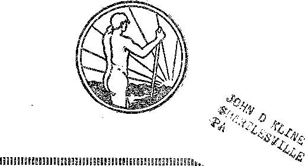

A JOURNAL OF FACT HOPE ANDZ COURAGE
ITALY AND MUSSOLINI
SHAMS OF CALIFORNIA
ALUMINUM POISONING
AT HIS TEMPLE
eighth of a series of radio lectures by Judge Rutherford
iiiiiiiiiHiiiiiMiimmiimmiimmmimiimmnmmiiimi
EVERY OTHER WEDNESDAY 5c a copy - $1,00 a year- Canada &. Foreign $ 1.50
Volume X - No, 259 August 21,192 9
Contents
Labor and Economics There Is Plenty for All
Social and Educational An International “Public Meeting”
World’s Northernmost P.adio .............. 749
Heading and Writing in Thirty Lessons
A Little Word About Health Articles ........... 756
A Busy Paper in a Quiet Town . . . .
Civilization a l’amekicaine .......
F i n a x c e— Commerce— T r a n s port at i o n Wilkes-Barre Refuses to Pay Water Bills ....
Political—Domestic and Foreign Shams and Shames of California
Italy and Her Master Politician ........... .
The Bishop of Gloucester .....
Uses of Pennsylvania State Constabulary
Agriculture and Husbandry Sixty Bushels of Pigs ....
Science and Invention
Lethal Power of the New Poison Gases
Home and Health Bo Aluminum Kitchen Utensils Have ‘1A Clean Bill of Health ” ? . 754
Religion and Philosophy
Infidelity Among Rabbis .............-. . . 753
A Colporteur Experience in Wales
The Children’s Own Kadio Story
Published every other Wednesday at 117 Adams Street, Brooklyn, N. Y., U. S. A., by WOODWORTH, KNORR & MARTIN
Copartners and Proprietors Address: lit Adams Street, Brooklyn, N. ¥., U. S. A.
CLAYTON J. WOODWORTH .. Editor ROBERT J. MARTIN .. Business Manager NATHAN H. KNORR .. Secretary and Treasurer
Five Cents a Copy—$1.00 a Year Make Remittances to THE GOLDEN AGE Notice to Subscribers: We do not, as a rule, send an acknowledgment of a renewal or a new subscription. A renewal blank (carrying notice of expiration) is sent with the journal one month before the subscription expires. Change of address, when requested, may be expected to appear on address label within, one month.
Foreign Offices
British .............34 Craven Terrace, London, W. 2, England
Canadian ........... 40 Irwin Avenue, Toronto 5, Ontario, Canada Australasian . . T Beresford Rd., Strathfield, Sydney, N. S. W., Australia South Africa . ........... 6 Lelie Street, Cape Town, South Africa
Entered as second-class matter at Brooklyn, N. Y., under the Act of March 3, 1879.
; ■ rrr:-------------------;■ ’,',:;.™r.-:r,%^——r— s^;:-—
Volume X Brooklyn, N. Y., Wednesday, August 21, 1929 ■ Number 259
AGAIN the voice of Judge Rutherford, president of the International Bible Students Association, will be heard here, “over there,” and in parts of everywhere! We reproduce, by courtesy of the Association, an announcement that appears widely at this time in newspapers and other publicity channels.
Since the early days of last May Judge Rutherford has been “over there” filling lecture engagements in the principal centers of England, Scotland, France, Switzerland and Germany, as well as conferring with managers of the Association’s European offices. Those who know him will tell you that while abroad his keen powers of observation and analysis have undoubtedly brought together some highly interesting material, which the millions of listeners who hear him on August 25 may expect to share.
This address, by the way, will be his first after returning to America. His subject has a flavor that smacks of something very tasty, something everybody wants! “Health and Life for the People.” What will he say this time? Let’s listen!
It will be observed in the accompanying list of United States and Canadian stations that among the seventy “and others” to be linked together for distribution of the address is included W2XAF. This odd set of call letters is recognized as the “name” of the powerful short-wave transmitter of the General Electric Company, Schenectady. Its operating channel is 9530 kilocycles (31.48 meters). W2XAF is heard regularly by listeners in Europe, Central and South America, Cuba, Panama, and other regions often designated as “foreign”. Now, however, all these hitherto remote corners of the globe are strangely brought, simultaneously, within the range of instant communication. So when Judge Rutherford speaks on August 25 he will truly be
Ayes, any one who desires to copy any or all of this article, for the purpose of newspaper publication or microphone announcement before August 25, is welcome to do so.—Editor, addressing an international “public meeting”.
Those two small words at the very bottom of the accompanying list are enough to arouse anybody’s curiosity!
Maybe you ask, as we do, How many others?
CKOC CKY KDYL KEX
KFAB KFEQ KFH KFWM KGA KJR KLZ KMJ KMOX KMTR KOA KPRC KQV KSL KSOO
KWKH
KYA WASU WBBR WBCM WBRC WBT WCAU WCOC WDBJ WDSU WEBR WFBL WFDF WFIW WGBF WGBI WGHP WGY W2XAF WHDH WHEC WHK WHP WIBO WIL WJAD WKBF WKBN WLAP WLBZ WLEX WLSI WMAL WMCA WMMN WODA WOKO WOOD WOQ WORD WOV WPCH WPTF WREC WRHM WRR WSPD
X co
>
>
o X
O £ m x
*o x o d ? 2
cp T3 O z (p O X m o
ct <
z H m 53 z > H o z > r
to CT
m CP § rn z ■4 CP > CP CP O o >
WTAR WWVA and others
Shams and Shames of California
THE governor of the state of California, and everybody else in California, knows perfectly well that Thomas J. Mooney has been in prison for thirteen years, and is still in prison, for a crime which he not only did not commit, but could not have committed, because he was a mile away at the time it happened. It is the murder of Sacco and Vanzetti all over again.
All Californians, including the judge who sentenced Mooney, and the jury before whom the case was tried, now know and have expressed themselves as fully convinced that the evidence that sent this man to prison for life was all perjured evidence (paid for by the California branch of the saintly Power Trust). California is as bad as the impossible Massachusetts.
The chief of the San Francisco Detective Bureau, the police captain detailed on the Mooney case, the district attorney of San Francisco, and other police officials and officers of the prosecution, have united in their requests for the release of this man; but the Power Trust stands pat, and one of its governors after another fails to do a thing to please justice.
California is about as rotten as it can be, but those who are interested in making it worse are hard at work. The legislators have now passed a bill, and it has been signed by Governor Young, that would give a year in jail and a fine of $5,000 for saying over the radio a single word reflecting on Calvin for burning Servetus at the stake, or a like penalty for each offense of mentioning the hypocrisies of any other clergyman, living or dead.
Probably the most tyrannical railroad company in the United States dominates the state of California. One of its hobbies is to keep all other railway lines out of the state. A subscriber writes us that he found his daughter signing n ames of business firms to a stack of cards given her by the railroad’s employees. The cards petitioned against the building of additional railroads into territory which they served. The girl had obtained the names out of the telephone book. Her father threw them all in the fire.
Just how rotten California politics are may be seen from the following expose of the contemptible practice by which hangers-on manage to gouge $1 apiece out of almost every man or woman who goes to get an automobile driver’s license. This is done by opening bogus offices on each side of the office of the state itself, where, of course, only the legal fee is charged, and in California that fee is nothing. The subscriber says:
You can get license to drive free from the State, but if you go into one of these places you pay $1.00. When a person is looking for the License Department he sees one of the following places and goes in, thinking, of course, that it is the State License Department. South of the State License Department are the offices of:
(1) Southern California License Service,
(2) Auto License Service,
(3) City Auto License Service,
(4) Thames Auto License Service.
North of the State License Department are the offices of:
(5) California Auto License Service Co.,
(6) Operator Application Service House,
(7) California Auto License Service Co.,
(8) Southern California Auto License Service, all in a row.
I do not know why Mr. Hearst does not investigate this, but I have not seen a thing about it in any paper. Neither have I seen anything about the cards the S. P. are sending out. These reporters must be dumb.
Our friend can disabuse his mind of the idea that the reporters are dumb. They know all about these things, and have probably written about them, until they found that those offices are part and parcel of the scheme of things in California, a part of the graft that is associated with “all the kingdoms of this world, and the glory of them”, and therefore not to be criticized or even mentioned.
Sixty Bushels of Pigs By B. W. Howe
A FARMER at Ballantine, Alberta, after storing the season’s crop of potatoes, left the overhead door open to dry out the potatoes. He closed the door a few days after and covered it heavily with straw. About sixty bushels of potatoes were in the cellar.
The cellar was not uncovered until early in January. You can surely imagine the surprise of the two persons on finding two pigs and no potatoes. The pigs were blind, and in another day would have died of starvation. They were about one hundred pounds each in weight.
Italy and Her Master Politician
IN A territory only slightly larger than New York state and New England Italy supports a population twice as great. Next to Switzerland it is the most mountainous country in Europe. The Alps and the Apennines cover two-thirds of its surface, and one-fifth of the land is wholly unproductive of vegetation, from natural causes. The skies are almost always bright.
In the Old World Italy lies opposite to New England, New Jersey and Virginia, and has all the extremes of climate that mark the temperate zone, with all its great variety of agricultural products. Everything that grows anywhere in Europe is to be found somewhere in Italy.
The Apennines, which run the length of the country, have a chain of peaks running from 5,000 up to 9,595 feet at Monte Corno, and are, for the most part, barren, and are wanting in the glaciers, perpetual snows and rich vegetation that cluster about the Alps in the north. They are also wanting in the fearful and wild grandeur of the Alps.
Italy is divided geographically, racially and politically into three parts. The continental portion lies between the Ligurian Sea and the Gulf of Venice and is cut off from the rest of Europe by the Alps. It is the granary, the workshop and the educational center of Italy, the home of its finest people.
The peninsular portion, lying between the Tyrrhenian Sea and the Adriatic, is of about the same size as the continental portion. It is approximately a hundred miles wide, and four hundred miles long from northwest to southeast, with Rome and Naples not far from each other, near its center.
Insular Italy comprises the large islands of Sicily, Sardinia and Corsica on the south and west, fourteen 2Egean Isles, taken from Turkey in the Avar of 1912, and the colonial possessions of Eritrea, Somaliland and Libya, all situated in Africa and not at present desirable habitations for whites. The total population of the colonial possessions is about two millions.
When earth’s family was small it spread out around the edges of the Mediterranean. As it gradually spread westward Italy came to be its natural geographical and political center. As it continued to move northward and westward Italy continued to play an important part in human progress, often accelerating, often retarding, and does to this day and hour. No other country in Europe can compete with Italy in historical memories.
There are long stretches of coast-line without natural harbors, but Venice and Genoa are world-famed for their shipping interests, and the Bay of Naples is considered one of the most beautiful and one of the most important harbors anywhere, rich in natural attractions, a center of great agricultural and fishing industries.
The gateways into Italy from the north are such as to make it easy to enter the country rather than to leave it. The northern passageways through the Alps are by long valleys of easy ascent. On the south they are precipitous. For this and other reasons most Italian rivers are torrents. The River. Po, though only 261 miles long in a straight line, carries more water in proportion to its length than any other river on earth. It is unnavigable and almost uncontrollable.
In two thousand years the Tiber has brought down and deposited a beach two and a half miles wide; while the Arno, in the same length of time, has brought down and laid a beach five miles in width. From a geological point of view, Italy is considered a young country, still in the making.
When its moutainous nature is considered, it has very little mineral wealth. It does mine considerable zinc, but, having no coal, has had to send the ore to Belgium to be treated. Some of this ore is now being treated at home by electrical methods, water-power being used. Iron ore is found in Elba, and beautiful marbles in Tuscany and other places.
In relation to soil and climate, Italy has been a great sufferer from malaria; but this is being corrected by improved sanitation. The lakes of Lombardy, the art in stone, canvas and music, and the jewel spots of beauty in the Alps and Apennines, make Italy a natural Mecca for tourists; but the tourist trade is noticeably falling off.
A Glimpse at Italian History
From the time of the break-up of the Roman Empire the effort of the political group centered at the Vatican has been particularly directed toward the disunion of Italy, and this policy met with surprising success. A disunited group of petty states could offer no resistance worth white to the preposterous claims of the ‘hegemony of all the earth (and of heaven as well)’ there centered*
For hundreds of years the Italian people, sick of the continual civil wars, and wars between the petty states, settled down to home comforts, arts and literature, and engaged mercenary troops to do their fighting for them. These troops hired out to the highest bidder, and sometimes fought alternately against and in defense of the same city.
Before the French Revolution, the territory which now comprises the kingdom of Italy was inhabited by about 17,000,000 people and was composed of nine petty states. There was unification then for a time, but the old conditions obtained afterwards; and it was not until 1860 that the Italian patriot Garibaldi invaded Italy, rallied all Italians to his standard, and made it one united country, finally taking over Rome itself in 1870.
The Italian People
Italy presents the curious phenomenon of a people all speaking one language and yet widely different from one another along other lines. So different are the North Italians from the South Italians that the United States government keeps them separately classified in its records.
At different times various parts of Italy have been overrun by Phoenicians, Greeks, Arabs, Spaniards, Gauls, Germans and Slavs, and all these have left their impress upon the people, so that Italians vary greatly in character and physical type, the northern ones more than the southern ones.
The Italians are natural musicians and music lovers. The mere mention of Italian opera, of Verdi, Rossini, Bellini, Donizetti, Stradivarius, and Paganini, of Puccini, Palestrina, Tetrazzini and Caruso is enough to make the dark and handsome features of any Italian light up with happiness. Instances have been known where Italian mobs, bent on destruction, have been quieted and calmed and sent home in peace by the beautiful playing of a single violinist. Such an incident occurred at Lucca, Italy, in March, 1920. The violinist was a Bohemian lad of 18, Vosa Prikoda.
The present population of Italy is about 40,000,000. Every Italian who leaves his homeland hopes to be able to return some day; and a third of them do so. A common salutation of the people is, “God give you a good day.” Even the profanity sounds musical, but descends to levels unapproached elsewhere.
The Italians love speed in everything, and many speed records in various lines and at various times have been made by them. The Italians are a hard-working, sober, dignified, reserved people, not easy to rouse to laughter. Bathing is more common in northern Italy than in the south, where it is regarded as a luxury of the tourist class, according to the report of a traveler.
Before Introducing the Master Politician
Before introducing the master politician, we wish to mention some of the really great things he has been accomplishing in Italy, but let these things speak for themselves. After mentioning the man himself we have no ambition to applaud him in any way. He stands for tyranny, the thing America most detests, but for which, alas, America is headed at breakneck speed, willy-nilly.
Ten years ago it was said of Italy that it “is the land of art and fleas, sunshine and stench, degradation and poverty, filth and immorality”. Naples was described as a center of “filth, poverty, and dirt in its worst stage. The streets are used as sewers and public toilets. The children run naked, and modesty is unknown. No one can imagine the stench, and all the streets are alike”. Now this has all been changed.
In 1928 another writer said, “Naples, once famed for its dirt, disorderliness and backwardness, no less than for its beauty, is-now unrecognizable to those who knew it six years ago. The ■ city, once one of the dirtiest in Europe, has become one of the cleanest.” Paderewski only a few months prior to the above remark wrote, “I have seen Italy before. The difference is tremendous. Before, I saw dirty streets, thronged with beggars, and disorders and chaos were apparent everywhere. I have seen Italy again. Streets, railways, even autos, were spotless. And even in Naples, famous for its beggars, I saw only one man asking alms.”
Another writer, who visited Italy this year after being away twenty years, said: “Twenty years ago, one frequently had to complain about the unreliability of trains, the post and deliveries of mail. The civil servants who came in contact with the public often made an impres-
sion not in keeping with their office. Even the best cities looked neglected and frequently uncle? ’ as if their streets had been unswept for days. And the villages and rural districts—oh I All this has been changed through and through. Trains are on time, the streets of the cities are clean and well cared for, the civil servants and the police have really an elegant appearance, the country makes an impression of increasing prosperity, and traffic conditions are satisfactory in every respect.”
Solid Progress on Many Lines
Italy is now embarking on the most ambitious road-building program of all European states. Fifty thousand men are at work on a system of new motor highways that will make every corner of the peninsula accessible to motorists. Forty thousand miles of concrete highways will be laid.
In the last five years Borne has grown, in proportion to its size, more than any other city in the world. Italian currency has been reestablished on a gold basis. Millions of dollars’ worth of debt certificates have been burned. Treaties of conciliation and arbitration have been concluded in the last five years between Italy and Great Britain, Jugoslavia, Switzerland, Austria, Germany, Spain, Bumania, Albania, Hungary and Chile.
The powerful and dreaded Mafia, which ruled over Sicily and southern Italy, has had to give way, and its leaders are in prison. Adultery has been made a crime punishable by fifteen years’ imprisonment. Holidays have been reduced to a minimum. The handshake has been abandoned for the salute. Subways have been built in Milan. Motor traffic is very large.
Just now a great effort is being made to grow in Italy all the food the Italian people require, a very great undertaking the results of which are not yet specially noticeable. This involves the reclamation of 5,000,000 acres, at a cost of $420,000,000, and the employment of half a million men. A new kind of wheat is grown which ripens three weeks ahead of other varieties and thus escapes the harmful influence of the hot Italian summer.
The country is now covered with a dense network of electric lines, penetrating into the most remote villages. Immense water reservoirs have been constructed to offset the dry season in lower Italy. All this has been done in five years. The artificial silk industry employs 65,000 workers.
Hours of work are long, nine a day; and wages are low, $13 a month for agricultural workers in summer and half that in winter. The country’s principal exports are grapes, olives, cheese, live animals, anchovies, tuna-fish, sardines, sponges, coral trinkets, agricultural products and art objects; also young Italians.
Mussolini is but forty-six years of age, having been born in Bumagna, July 29,1883. His father was a blacksmith; his mother, the village schoolmistress. He has large, dark, lustrous eyes, and a big, bulging forehead, and in his school days was considered especially mischievous.
In his youth he was in the navy; later, a journeyman stone-mason, a teacher and an editor. Bejected by a Masonic lodge ‘on account of his bad reputation’, he took up socialism; and as editor of Avanti he broke away from socialist traditions, and in 1915 joined with d’Annunzio in a furious demand for war.
Long before the war many a fascia had been organized for one purpose or another. A fascio is merely a club of men devoted to the accomplishment of some definite purpose. In 1915 Mussolini organized such a club which had for its objective the forcing of Italy into the war on the side of the Allies. The idea spread over Italy. It was the due time.
After the war Italy was overburdened with a huge debt, socialism was strong in the land, and capitalists feared the country would go Bolshevik. Mussolini, in the spring of 1919, reorganized the Milan fascio to assure the returned soldiers congenial employment and the control of the country. Again the idea spread. Again it was the due time.
In his new paper, Popolo d’Italia, in the fall of 1920, Mussolini was still congratulating the workers on their general railway strike of the previous spring and their occupation of the metallurgical industries, when he became convinced that they could not handle the situation that was developing. As the government itself was in a weak condition, Mussolini determined to make himself master of Italy, and the march on Borne was started from all parts of the country.
Italy’s Unchallenged Master
We do not share the frequently expressed view that, in the recent settlement with the pope, Mussolini surrendered to Batti. Either one of them would commit any crime in the calendar to obtain what he wants, and both of them want power; but Mussolini has an uncanny power of knowing when to punch, and the ability to give a knockout blow when he strikes. He selected the right time to settle the so-called Roman question, and settled it in the way he did so as to get more power for himself, not less. Moreover, he is a young man, with boundless ambitions, while the old pope is but two jumps from the black wagon.
If we are to believe the papers, Mussolini is a regular visitor to Countess Maria Pranzetti, clairvoyant; and if he is such a visitor it may be settled that he is getting advice direct from the Devil as to what to do to make the biggest hit with humanity. But the pope is getting similar aid; so it is just a question of which man or which system will serve his own purposes better. It seems to us that Mussolini is more his favorite than the other, but we are not sure. We wait to see.
Mussolini believes that his successor is not yet born, that he is a man of destiny, that some mystic power is protecting him from assassins, and that the time will come when he will bear rule over all the earth. Looks like the Kaiser Wilhelm all over again, does it not? Reporters have said that he cast a hypnotic spell upon them when they were in his presence. One of them said:
From the moment I entered his amazing office I had this feeling, a sensation I remember having only once before. That was when I interviewed Mme. de Thebes, a celebrated sorceress of Paris, now dead, in her mysterious room hung all around with black velvet and lighted only by the glow from crystal globes used in the practice of black magic.
Mussolini holds eight government portfolios, more than half of the cabinet; and has so much work during the day that he can attend the Chamber of Deputies only at night. He is described as the most polite of men, yet affecting a profound scowl. Moreover, he is accused of being in deadly fear of truth and determined at all hazards to suppress it. In all this he reminds one of the Kaiser.
Like the Kaiser, he is excessively vain. While he still lives his admirers are erecting to his memory one of the greatest obelisks of pure marble ever chiseled out. It took the equivalent of ten thousand working days to move it the first thousand yards.
The following is the oath which Mussolini administered to the Fascist! before their march on Rome; it specially appeals to the Italian mind:
We, the Black Shirts, by the blood of 2,000 martyrs whom we evoke as witnesses and judges, hereby declare that we will not wear on our persons any gold, silver or precious metals or stone. We will work ardently and without pay for the good of our country, will give all superfluous ornament to a fund for supporting enterprises having goodness, civilization, beauty and Italy’s improvement as their objects.
The march on Rome was one of the best organized and one of the strangest marches in history. At the appointed hour on the night of October 27,1922, little Fascist squads met at their accustomed gathering-places and proceeded to their agreed-upon mobilization center just outside of Rome. The face of Italy was covered with them.
When the king, who had been away, returned to Rome, there were 50,000 Fascists surrounding the city, streets were barricaded and machine guns ■were ready to defend it. The prime minister met him and asked his signature to an order proclaiming martial law. He refused, and virtually abdicated in that instant, for his government ended right there.
At noon on Sunday, that same day, he wired Mussolini to come to Rome and form a cabinet. Mussolini hopped into an airplane and came immediately. Since then Italy has been in his hands. Now it is in his pocket.
Those who opposed the new administration ■were dealt with ruthlessly. The castor oil campaign sounds very funny to those who have no sense of humor. But wherever any man or even any woman wanted to carry on by constitutional methods, he or she was forced to declare for Fascist! control, under penalty of having to drink a pint of castor oil. The Fascists stood about and waited until their victim, deathly sick, was covered with excrement, when they left him, shouting with laughter, to go on to the next victim.
The murders of the Masons and the socialists followed as a matter of course. Not a voice could be lifted in protest. The noble Matteotti was done to death in a taxicab because he dared to speak in parliament in defense of the commonest rights of the people. His body, frightfully mutilated, was discovered in a canyon weeks later. Mussolini has many times been accused of having given the order to the murderers. The crimes that took place in Florence were the work of devils in human form. Nothing that unbridled force could do to destroy life, freedom of speech, of action, or even of thought, was left undone. Masonry in Italy was destroyed.
A 'i of Murder
Fascism does not deny, and can not deny, that it is a rule by force and that it does not stop at murder to gain its ends. The Tcheka, or secret committee for doing away with opposition leaders, was organized in Mussolini's private home in the year 1924, according to former undersecretary of the Foreign Office, Signor Finzi. Mussolini has remained president of the Tcheka during the entire time that the reign of murders has been under way. According to Finzi, these murders of Matteotti and others were agreed upon in advance and sanctioned and legalized "For reasons of State”. Nietzsche all over. The Kaiser out-kaisered.
Today a boy who wishes a chance to make his way in the world in Italy must get the permission of the police before he can leave his place of birth. Could any slavery be more complete? Hundreds of professors and other well-educated people are completely restricted in all their movements during the day, and especially after dark. Such a land is a living hell.
Blackshirts are everywhere, railway blackshirts watching passengers and railwaymen, frontier blackshirts preventing Italians from leaving Italy and foreign anti-Fascists from entering Italy, and shipping blackshirts keeping tab on seamen and everything that goes into or out of Italy. Whenever two Italians meet a third it may be depended on that the third is a spy. Servants report regularly to the police all they see and hear in the homes where they work. What an intolerable situation!
Working men must join the Fascist! or be without employment, as a government order compels employers to apply to the Fascist LaborBureau for employees. If an Italian abroad writes or speaks against Fascism, his property and that of his family, if he has either in Italy, are objects of Fascist attack. Residents of Italy have smuggled out letters to their relatives abroad begging them to quickly become Fascisti so as to save their loved ones from ruin.
Italy has become a land where every man is spying on his neighbor (as it was in the United States during the World War). If anybody is known as a confirmed enemy of Fascism he is arrested, given no trial, is not even questioned, but is simply held in jail until the time of deportation comes. He is then marched handcuffed to the nearest station and taken away. There is no appeal, and often the deported man’s family is not allowed to see him.
The victims are sent to the small volcanic islands around Sicily. These islets are tiny, barren, wind-swept, without running water or vegetation, and are among the most dreadful places of confinement on earth. At last reports over two thousand men and women were in these horrible places.
For singing on the street a song which criticized the government a Milanese stonecutter was first kept twenty months in prison without trial, and then was fined four pounds and sentenced to five additional months. His light sentence was given because he pleaded that he was drunk at the time.
Blackshirts have the right to stop any persons on the street at night and demand to see their papers. Refusal to comply is insubordination to the police. On the other hand, when a foolish fifteen-year-old boy attempted to shoot at the dictator he was instantly knifed to death and his body was stamped beyond recognition. Violence of this kind is considered 0. K.
In the Tyrol the Germans have been deprived of all their rights. Parents may not even teach German to their own children in their own homes. Recently when a champion of the German tongue was buried and the discovery was made that the funeral wreaths were in German the Fascists invaded the cemetery and destroyed the floral pieces at once.
When two thousand German farmers in the Tyrol sought to cooperate with Mussolini’s new agricultural program, Italian Fascists drew up a new program, the government condemned the property for the public good, paid each German a small amount for his land, and ejected him from his home to provide for himself and his family elsewhere.
Blackshirts must show their zeal for the cause, or they are in trouble right away. A year ago the membership of the various Fascist organizations was 6,814,703. Eighty thousand youths •were added to the number during the year, and thirty thousand were expelled for lack of zeal.
There are no limits to Mussolini’s ambition. He is at one and the same time holding positions which, in the United States, would make him president, vice president, secretary of state, secretary of war, secretary of the navy, secretary of the interior, secretary of commerce, secretary of agriculture, secretary of labor, chairman of the National Republican Committee, delegate to the League of Nations, a patron of the arts and of archeological research, a gentleman farmer and a violinist.
He had proposed to give the Grand Council of Fascism the right to alter the succession to the throne (thus paving the way for him to crown himself); but at the last moment the Grand Council weakened on this, and it was for the time omitted from the Fascist program. Nevertheless, the man who caused this diversion from the Mussolini plan, Federzoni, has been demoted from his position as Minister of the Colonies and Mussolini has taken that job too.
Voting has become a joke. Under certain conditions you can vote “Yes” to a slate that is made up by the Fascist Council. In most instances the judges of election gave out only the “Yes” tickets. If any did vote “No” they were in danger of beatings. If they wrote “No” on the “Yes” ticket, the ticket was counted “Yes” anyway. As a consequence, at the last elections the Fascist ticket was elected by a vote of 8,663,412 to 135,761. The Grand Council of the Fascismo has by this vote been made the supreme national and state authority.
“The Shouting Millions”
Mussolini knows the shouting millions have not one particle of common sense, and is holding them in line by the same methods in use from time immemorial. Though they are always the sufferers, they are easily fanned to enthusiasm by every movement away from peace and toward militarism.
Military service is compulsory for all citizens between 20 and 39 years of age. Service in peace-time may run as high as thirty-four months. When Mussolini recently asked 70,000 veterans if they were ready to fight for Italy again, they all roared “Yes”, just as the Kaiser’s troops would have done.
Both Italy and France have strongly fortified the border-line between the two countries, all the way from the Mediterranean to Mont Blanc, and there is bad blood between the two nations.
The passes bristle with cannon and are closed with barbed-wire blockades. .
By a financial trick state expenses have been transferred to the municipal budgets. In Italy every acre of land is in some municipality and every municipality has a mayor. Every municipality is therefore a state within a state; and this is so true that the officers of these 9,200 municipalities issue passports to those who wish to go from one to another.
Every municipality in Italy is to have its own aviation field, while Rome already has what is claimed to be the finest airport in the world. Municipalities will be kept enthusiastic by distributing 1,000 free planes to reserve flying officers. The government will supply free hangar space, and gas and oil at cost. This officer must fly a minimum number of hours each month, when, where and with whom he pleases.
Mussolini has patterned his govermnent after the Vatican. He has his own “Sacred College of Cardinals”. He nominates members of the Grand Council, and, in turn, each of these is supposed to name his successor when the post becomes vacant, thus perpetuating the Fascist regime.
King Victor Emmanuel III might as well hire out as a farm hand. In a recent edition of the Italian Who Is Who in Italy? his biography was the shortest one in the book, while Mussolini’s was the longest. Perhaps this was accidental; but hardly. Mussolini wrnnts to be the whole show, and is.
Following the same method of reasoning that led Kaiser Wilhelm to' think he could become ruler of the world, Mussolini has stretched out his hand to Italians in other lands, and has sought and does seek, by methods similar to those used in Italy, to eventually gain the dominance he previses.
Like the Kaiser, he has some basis for his dreams, because there are now 9,118,593 expatriated Italians living in different parts of the world, of whom 7,674,593 are living in the Western world. Should this large number become thoroughly impregnated with Fascist rules and ideas, they would be a formidable force indeed; and extreme efforts are being put forth to make every Italian everywhere fall in line with the program.
We have had a chance to see how this works in America. All Italian emigrants are registered as voters in Italy and are urged to avail themselves of the chance to vote for Fascism. Bulletins have been issued ordering Italians abroad to send their children to Italian schools whenever that is possible, and warning of Fascist displeasure, with all that that portends, if the rule is not obeyed.
Great numbers of Fascist agents in the guise of business and professional men have visited America from Italy and have gone throughout the country spreading the doctrine wherever Italians live or work. All Italians are warned to join up. If they do not do so, their relatives in Italy are threatened. It is a new Mafia on a greater and grander scale than was ever dreamed of by the old one.
A petition of liberty-loving Italians in this country has been presented to PresidentTTIoov-er, setting forth that Fascist agents here have destroyed the free Italian press in America, created an espionage system over Italians residing here and continually invaded their rights. He has been urged to make an investigation.
Acting through its regular diplomatic channels, and with inconceivable cheek, the present Italian government has levied taxes upon bachelors now living in America, and if they do not pay, or furnish proof that they are married, the tax is collected from their relatives in Italy. It has gone further and in cases of persons dying intestate and without heirs has boldly claimed their property, contrary to all United States law and all precedent. It has done this in furtherance of the Kaiser’s idea that "once a German, always a German”; but the Kaiser found this did not work in America, and it remains to be seen if it will work for Mussolini.
Nevertheless, Professor Marx, of Stanford University, California, predicts that, at the present trend, Fascism will rule America in ten years. American financiers are helping to put this across, and look with favor upon the whole scheme, as a means of keeping the common people down and themselves for ever on top.
In the days of the general strike in England blackshirts appeared in England boldly marked B. F. (British Fascists) and issued a proclamation stating that their purpose was to preserve law and order and prevent a revolution and Bolshevism. Strange how these financial Bolsheviks fear Bolshevism!
That was all right. Anybody can do anything he likes in Britain so long as he does not interfere with British liberty. The second day the blackshirt group started the cudgel and castor oil methods that had been so successful in Italy, when government and people alike turned upon them and beat them into unconsciousness. Then and there British Fascism disappeared from off the face of the earth.
A Campaign for More Babies
One of the tenets of Mussolini is that the more Italians there are in the world, the greater will be the power of Fascism, and the quicker it will be able to gain its objective of taking control of the whole world. Hence he has inaugurated a great campaign for more Italian babies. For practical reasons, as well as reasons of state, it has been necessary to make Italian women enthusiastic about his plan.
Women are treated well under Fascism. In factories they receive the same wages and conditions of work as men, maternity insurance is provided for, and two months’ vacation at time of childbirth. Participation of young women in marksmanship contests has been encouraged, and thus a love of and belief in war has been inculcated. Thus, by various devices, Mussolini has become extremely popular with the women. In this he imitates the papal system, which aims to control the men through the women, and succeeds.
In some towns married people have been divided into ten classes. In the first, called the ‘category of honor’, are couples with seven children and upward. These have been favored with income tax concessions, cheap tram fares, free cinema seats, and general social precedence. Musicians turn out when twins are born. Childless couples are bullied and badgered.
The Fascist press has boldly urged the sending of childless women to the penal islands for a year, in the hope that sheer boredom may lead them to long for children. When the question is asked why Italy should desire great increases in her population when she already has more than she can feed, the answer is made that Italy will make war to take from others such parts of the earth as it needs to locate its excess population, and that if the people sought to be dispossessed resist, the war will be their fault, not Italy’s. The tax on bachelors is popular with the women of Italy. It exempts only Catholic priests, soldiers, prisoners, foreigners and cripples.
If women like to be bossed, they are getting plenty of it in Italy. They are told what they may wear and may not wear, and the length of their garments. In the southern provinces they are not even taught to read and write, or were not until recently. However, women are being given greater opportunities for education than formerly, and in the universities can follow the same courses as the men.
Mussolini and the Vatican
For political purposes Mussolini is a Catholic, but for no other. The man worships himself, and any homage he extends to others is done for reasons of state. There are some millions of Italians who believe the pope has power to send them to hell or get them out of hell. So long as they think that way it serves Mussolinis purpose to have friendly relations with the system which holds them in bondage. He can make use of the pope, albeit he may get bit occasionally in handling him.
Mussolini says that Italy is a spiritual nation. The “Americana Encyclopedia”, on the other hand, says cautiously: “There are some who say that in Italy there is not now and never has been a true religious spirit, but on the contrary a constant and universal indifference: that the official religion and the rites of the Roman Catholic Church are nothing but a travesty of pagan ceremonies: that everything in worship is external and superficial and is a reflection of the sentiment of classic art and of the political traditions of the Latin races.” We take a third position, which is that there are among the Italians a few real Christians, and mighty few at that.
Fascism boasts that it has restored the crucifix to schoolhouse walls and court-rooms. Now a deal has been fixed up by which the pope is a little monarch on his own account on a little plot of ground 100 acres in extent, and has received a present of $37,500,000 in cash and $50,000,000 in bonds which he never would have had if United States financiers had not put up the money to finance Fascism. When the deal was fixed up all Catholic priests on the penal islands were freed.
No one yet knows or can know which of Italy’s two bosses will conquer the other; but it is a safe bet that the fur will fly between Mussolini and the pope, and it does not look to us as if even the clever politicians of the Vatican will be able to prevent Mussolini from making use of them to carry out his own dreams of power. At present they are fighting over the question as to who shall educate the youth of the land and who, therefore, shall control its future. Mussolini has the youth in his hands, and we doubt very much if he will give them up to anybody or anything.
In the last fifty years the percentage of illiteracy in Italy has been reduced from 69 percent to 27 percent. There are now thirty state universities, free universities or institutions of university rank in Italy, 'with a total enrolment of 34,580 students.
Fascism is now doing to education in Italy what the Power Trust is doing to it in the United States. The children may be taught and may believe what Fascism and the Power Trust approve, and nothing else. All school textbooks are being overhauled with that end in view.
In the universities in both countries the same principles prevail. Professors holding liberal ideas are not allowed to remain. They must either fall in line with Fascism and the Power Trust program or they may retire and raise chickens. The percentage of male teachers in the schools and colleges of Italy is constantly falling off. It is hard for a real man to debauch the youth by teaching them what he himself does not and can not believe.
The Fascist press is circulating a Mussolinian Decalogue which is being taught the children in some of the schools, notably Milan. It is said that one of the commandments taught is as follows: “I am Italy, thy mother, thy sovereign, thy goddess. Thou shalt have no other mother, sovereign or goddess above me. Thou shalt honor the government and Fascismo.” Other commandments are: “Know thou that the Fascist, and especially the militia members, should not believe in perpetual peace. Mussolini is always right. One thing should be dear to thee above all, the life of the Duce.”
Efforts to encourage the buying and reading of books, by a so-called “book festival” each year, when special rates are offered to bookbuyers, have not met with much success. The people of Italy, purposely degraded and neglected for centuries, are unprepared as yet to enjoy much of real liberty.
How Long Will Fascism Last?
The thinkers of the world, the liberty lovers, are asking how long this thing can last. But who can answer the question? The answer is in God’s Word, but God does not reveal the secrets of His Word to everybody, and we are waiting upon God to see how He will show His hand in this whole device for riveting upon the Italian people one of the worst forms of slavery ever conceived, a slavery which, under the guise of law, is lawlessness itself.
Writers who have been in Italy say that, when nobody is around, chauffeurs, working men, guards and guides, without a single exception, denounce the insufferable tyrannies of the present regime, even though they themselves are wearing black shirts. On the other hand, the well-to-do, the more prosperous professionals, are for Fascism.
An observant novelist analyzed the existing condition as hysteria, rather than a healthy enthusiasm. He gained an impression of impending disaster. The necessity of having domestics report regularly to the police what they have overheard discussed in homes where they work is a confession of fear. Suppression of Masonry and of freedom of the press confesses the same terror.
Mussolini thinks that people nowadays are tired of liberty; but there are many who do not agree, and in their exile in Paris and elsewhere the former statesmen of Italy and their friends are doing what they can to help their fellow Italians to see what is being done to them.
It is claimed that these liberty-lovers are smuggling twenty thousand papers into Italy weekly and distributing them, and that there are presses in Italy itself, hidden in cellars and haystacks, which are trying to carry on. But what can these do under such conditions as now obtain? Only Christ’s kingdom can ever free Italy from the tyrant’s grasp.
Violence will do no good. Fascism itself is violence. In the Slav districts taken over by Italy after the World War, arson has been tried. But what good does that do? People are already tired of the dramatic show. Probably Mussolini is at heart tired of it himself. Before they get through with it the Italian people will be so sick of the present reign of violence that when Armageddon does come and the Devil is really bound and Christ’s kingdom is reigning in full force and power, they will say from the bottom of their hearts, ‘Lo, this is our King, we have waited for Him, He will come and save us; and the former things shall not be remembered nor come into mind.’
The Bishop of Gloucester
A BRITISH subscriber has sent us a clipping from one of the national journals (probably John Bull, but name of paper and date of publication were inadvertently omitted) which has the following remarkable statement to make regarding the bishop of Gloucester. Here, at any rate, is one bishop that seems to know why he is a bishop and who made him a bishop and of what the duties of a first-class he-bishop consist. ■
He has publicly stated from the pulpit of St. Paul’s Cathedral that he finds no grounds in Christianity for condemning “Imperialism,” that the basis of human society rests upon the power of the sword, and that a big Navy is necessary to keep society from dissolution. He asserts that a “small knot of malicious armed men” are more powerful than a whole unarmed people, “however meritorious they may be,” and that no League of Nations, Federation of Mankind, or what not, is strong enough, without plenty of guns, bombs, and poison-gas, to retain what it holds.
Go to it, Bishop! There is no use to “bish” unless you “bish” properly. While you are at it you might as well get out of the business all there is in it. That is what the rest of them are doing, and you have just as good a right to your share of the swag as they have. And you better get it now, while the getting is good, ‘ere the evil days draw near when thou shalt say, I have no pleasure in them.’ But, oh how you will enjoy the overalls and the alarm clock when you finally get used to doing something honest!
World’s Northernmost Radio
/^VN FRANZ JOSEPH LAND the Russian the entire world by data regarding weather con-government is establishing the world’s most ditions, immensely valuable in making weather
northerly radio station. It is expected to benefit forecast.
Straws in the Wind
HE Armaments Year Book of the League of Nations shows that France has 569,000 men under arms, Russia has 562,000, Great Britain has 520,000, Italy has 251,000, Japan has 199,000, the United States 136,000, and Germany 99,000. The total number of men under arms for the six great countries of the world is 2,336,345.
IT IS no longer safe for ■white men to murder negroes in Florida. A white man of Jacksonville recently lured a black man into the woods and killed him with an axe because he wanted his woodyard. Now he has been hanged, the first white man in Florida to be hanged for murdering a negro. Surely the world does move.
A DENVER electrician came in contact with
2,200 volts, gave one yell, and dropped twelve feet into a pile of sand. When rescuers reached him his face wras black, his jaws were set, and he had swallowed his tongue. To all intents and purposes he was dead. After frantic efforts he was resuscitated, and now says that the entire experience was painless.
THE American Civil Liberties Union reports that during 1928 police broke up four times as many meetings as were banned or broken up in the previous year. It states that the cities where police interference with liberty is most habitual are Boston and Taunton, Mass., Philadelphia, Pittston and Wilkes-Barre, Pa., and Bellaire and Martin’s Ferry, Ohio.
THOSE who have read the Bible and have seen what a plain wholesome kind of man Peter was will feel sorry to see how things have gone to his head. The way the situation now is, according to dispatches, no one is even permitted to talk to his “successor” (or should we say, alleged successor) without kneeling, and in his presence only kings may wear gloves. According to that, every American citizen ought to wear gloves all the time when he is in Rome and in the little toy 100-acre city of the. Vatican.

ECLARING his purpose to retain civil and religious liberty in his country, President Dr. Cleto Gonzalez Viquez, of the republic of
Costa Rica, recently said: “I believe the return of the Jesuits into Costa Rica, whence they were expelled several years ago, would be a national calamity.”
Minor Keith, founder of the United Fruit
Company and virtual builder of Costa Rica, is dead. The United Fruit Company has 50,000 workers, owns most of the railroads in Central America, together with many of its ports, and boasts that it has never called for a marine or a battleship to protect it.
WHEN a three-year-old child at Uniontown,
Pa., fell into an enclosure where a bear was chained to a stake, and the bear started to claw the child, over the railing and into the enclosure went the child’s mother and put up such a gallant fight that the bear left off clawing the child and went to clawing her. Eventually both were rescued.
THE British people have just received a considerable shock upon learning that an ecclesiastical court has sentenced a man to prison and that no civil court could interfere. The man was imprisoned for buying a property which included a church, and then refusing to repair the church. It seems that an ancient law requires such repairs to be made in such instances.
A FTER being on strike three years, and having learned conclusively that the Mexican people could get along perfectly well without them, the priests in Mexico have returned to their jobs. The so-called settlement was a complete victory for the Mexican government, and a complete backdown for the papacy. All the priesthood had to do at any time was to abide by the laws, and this they are still obligated to do. No changes in the laws nor in their administration have been made.
A CAMPAIGN is on to teach illiterate mothers reading and writing in thirty lessons, and splendid results are being achieved. The work, which is under the general direction of the wife of Secretary of Labor Davis, has made the interesting discovery that the old learn much more quickly than the young and that thirty lessons are generally all that are needed to get a good start.
IT IS estimated that there are now 300 schools teaching Fascism to Italian children in the United States. From these schools 168 children have just been selected for a two months’ trip to Italy, there to get more fully inducted into the business of ruling by violence, so that when the time comes they can do their bit. There are 210 Fascist units in the United States, official figures.
WHEN her boy fifteen years of age graduated from school, his mother, a widow, living and working in Paterson, N. J., made a special effort and bought him a wrist watch as a gift. Three young men of his city met him on the main street. One of them attempted to take his wrist watch away, on the ground that he was a sissy. When he resisted, the three attacked him and one of them kicked him in the throat and killed him. The ages of the young "men” range from 15 to 17, and they are now held for murder. They have strange ideas of what constitutes manhood.
REFERRING to the lethal power of the new
poison gases, Senator J. D. Millen, of the Island of Tasmania, is reported in The Launceston (Tasmania) Examiner, as having said in a public address in that city: "There is no use saying the world will not tolerate chemical warfare. This is no new thing. Two thousand three hundred years ago the Spartans made use of sulphur fumes in warfare, but sulphur fumes could not be compared with the poison gases of today. I have experimented with some of those little brown powders, and I will tell you this—• if you took one and put it in a sink of water, you would know no more. You would be dead before your body struck the floor.”
Taken the Stigma Away
rpiIE president of the International Society of
Christian Endeavor tells us that the Kellogg Pact is a crusade of honor, and not a pacifist program, and that it has taken the stigma away from those agencies which work for peace. Students of the Sermon on the Mount will be glad to know that the stigma heretofore resting upon the Beatitudes and other portions of that sermon are now officially removed.
THE Virginian Pilot, of Norfolk, in an editorial says very truthfully, “The higher a man rises in the scale of intelligence and the more thorough his education, the more independent he tends to become in his opinions. If we were to make conformity in all beliefs the test of eligibility for citizenship as we now seem to do in beliefs on the subject of war, it would not be long before only morons could hope to pass the required tests.”
AT THE Life Extension Institute, on a very hot day, the entire clothing of a dozen women and of a dozen men was weighed. It was found that the average clothing of the women weighed 2 pounds 10 ounces, while the average clothing of the men weighed eight pounds six ounces, or about three times as much. Not a man in the world but admits that the clothes of men are silly; but not a man in the world has time enough, or sense enough, or courage enough, to inaugurate a dress reform such as the women are carrying so successfully to completion.
IT SEEMS that there is no way to direct directors of holding companies, no way by which these institutions can be held in check. The law provides that when stock is issued it must be offered alike to all. But one great holding company in New York has a by-law on its books compelling each of its directors to buy $100,000 of new stock every year at $50 a share (which is one-third its market value) and another bylaw compelling the company to issue a bonus of like amount to each director, so that he may have the wherewithal to buy. Just a plain case of stealing; and nothing can be done. The old-style holdup man has given place to the millionaire holding-company man.
POLITICAL PEACE
(Uncle Sam and his cronies admiring the Kellogg Pact)
Uses of Pennsylvania State Constabulary
A GENEBATION ago the United States was an orderly and order-loving country and it was next to impossible to find a policeman or officer of the law even when you wanted one. Now armed officers are to be seen on every hand. Conspicuous among these in recent history have been the Pennsylvania State Constabulary, the uses of which have been ventilated in our columns from time to time. The Pittsburgh Coal Company has used them freely.
But it seems they have other uses, at least some of them. At a recent-funeral in northeastern Pennsylvania a resident of the community told the editor that when, some time back, the McHenry distillery at Benton, Pa., was broken into and sixty-one barrels of whiskey were stolen, four of the Pennsylvania State Constabulary helped to do the stealing, and when the truck in which the whiskey was being taken to Mildred, Pa., broke down, one of the members of the Constabulary stayed by the truck until assistance could be brought to make the necessary repairs. Some police force!
Why Bishops Are Well Paid
SOME might think it strange that bishops are so well paid when they have so little real work to do to help their fellow men; but the matter has been partially cleared up by the discovery that the leading light of the Methodist Church South has been for forty years a diligent bettor on the New York stock market. Moreover, he stated that he was buying stocks on the partial payment plan, when the books show that all but one of his ‘purchases’ were purely bets. Some of his low-salaried subordinates want the bishop to get out; but that would be cruel, because it would reduce his funds and he would probably not be able to buy any more stocks on margin. And, horrid thought! he might even have to get to work.
There Is Plenty for All
PLEADING for what is called the cultural wage, a wage sufficient to enable all to gratify their desires for music, research, study and art in all its phases, Benjamin A. Javits, in a recent address over the radio from station
RELIGIOI
(A clergyman in Australia
WEAF, said: “It is economically unsound and is now recognized as bad business to have men and women torn and racked by their jobs. It is bad business for the whole country to have men and women who have nothing else in their lives but the burden of earning enough to keep soul and body together. It is bad business to have even the thought of possible unemployment, to say nothing of the fact that in this prosperous country we have millions of unemployed. There is enough raw material and enough machinery and man-power to make it possible by coordination and cooperation to give all the people a chance to really live the lives which they are capable of living.”
Infidelity Among Rabbis
INFIDELITY among the rabbis is strikingly shown in the following leading editorial in the Canadian Jewish, Review. The learned Rabbi Ferdinand M. Isserman, who wrote it, should buy himself an alarm clock and a suit of overalls and learn how to do some useful kind of work. As an explainer and defender of the Bible he is a figure six with the top removed.
From the Union Haggadah, prepared by the Central
Conference of American Rabbis, all references to the ten plagues, with which tradition indicates a wrathful deity plagued the overbearing Egyptians, have been

’ACE”
sing a bombing plane)
without miracles. Its
omitted. We believe the omission to be a wise one. The Haggadah is meant primarily for children. To tell them that certain supernatural occurrences were true, which the adult knows to have been impossible, is bad pedagogy. To link religion with the historicity of miracles is bad religion. And to teach children that a kind and loving God, among other cruelties, slew the first-born of all Egyptians, young and old, men and women,innocent and guilty, is to plant the thoughts which, for the thoughtful child, will tend to undermine faith. Judaism is beautiful, spiritual and majestic eternal verities stand and fall by their truth. They need not be bolstered up by ancient myths or legends. The writers of the Union Haggadah used good judgment in leaving out the narrative of the ten plagues. Parents and teachers of Judaism would be wise if in telling the Passover story, they did similarly.
No doubt Rabbi Isserman played a conspicuous part this year in the Passover ceremonies which so faithfully look back to something that in his judgment never took place at all. ---------------------------
Wilkes-Barre Refuses to Pay Water Bills
ANGERED by the sudden and extortionate increase in water rates pushed upon them by the Scranton-Spring Brook Water Company, when they recently bought out the Scranton Gas and Water Company, thousands of citizens of Wilkes-Barre are refusing to pay the new rates and have banded together to resist as long as they can find any judge that will hear their cause. In their manifesto they gently refer to the Scranton-Spring Brook 'Water Company as “a band of pretended legalized thieves whose motto or policy may be sized up in these terse but significant words: The Last Drop of Blood for the Last Drop of Water”. They also happily designate it as “the worst scourge on human progress and happiness that has ever cursed our beloved community since the dark and dismal days of the Wyoming Massacre”. The Water Company is arresting some 150 of the delinquents. As a matter of fact, they ought to be arrested themselves; but the property is worth some fifty million dollars, and that is fifty million reasons why they will have their own way in the end.
^PRESENT CONDITIONS
COAL MINE If
DRUDGERY j AT STARVATION I _____ WAGES.
COAL STRIKES .
ENORMOUS COST ' , OF LIGHT, POWER I and fuel• ; HARDSHIPS OF THE.
PEOPLE "Through HIGH COST OF* ;
Fuel -______
Suffering. . OF
IN E R.S
-Families .
INDUSTRIAL PEACE
(The Power Trust valiantly protecting the Status Quo)
I CAN TuRNISH All The people Heat, lightVPower AT very little.
COST
Do Aluminum Kitchen Utensils Have “A Clean Bill of Health” ? By Dr. 0. T. Betts
T N MARCH, 1929, an article, written by Albert ■*- A. Hopkins, was published in the Scientific American, New York, which included a large number of photographs and reading-matter sufficient to occupy three or more pages in that, prominent magazine. The article was reviewed by the Literary Digest, April 13,1929.
It was noted that the Scientific American received a host of inquiries regarding the matter of aluminum-compound poisoning by the use of aluminum utensils, which was the evident inspiration for the writing of the article by Mr. Hopkins. It may interest the reader to know whether or not the thousands of letters received by Mr. Hopkins constituted the cause of action in this matter, or if he desired to give the truth to his readers.
Let us now refer to the review of Mr. Hopkins’ article as given by the Literary Digest. Owing to the fact that in many thousands of attics, garrets and kitchen closets can be found batteries of unused aluminum pots and pans, Mr. Hopkins apparently decided to make an extensive scientific (??) review of the situation, to learn what caused the loss of these utensils in the many homes throughout our nation. This involved a trip to the New Kensington plants, New Kensington, Pa., where are located the mills making sheet aluminum and aluminum cooking utensils. The American Medical Association at Chicago, Ill., was next mentioned. Then the United States Public Health Service was included in this investigation. The London Lancet also issued statements giving aluminum a clean bill of health. Dr. George D. Beal, of the Mellon Institute, Pittsburgh, Pa., gave his opinion regarding aluminum utensils. Dr. George W. McCoy, chief of the Hygienic Laboratory of the United States Public Health Service, adds his bit to the defense of aluminum utensils. WHY???
It might interest the reader to know why a man who writes for such a representative magazine as the Scientific American would make his investigation solely from the above-mentioned sources. The writer feels that there are throughout the world a large number of unbiased organizations and scientists who have made examination of these matters, also of the physiological effects of aluminum compounds, to whom Mr. Hopkins could have gone to secure his information.
The Federal Trade Commission made a six years’ study of the physiological effects of aluminum compounds, in Docket 540, and the official findings are known as Averill’s report. This, almost in its entirety, is available at the present time in a book called “Aluminum Poisoning”, by Dr. Charles T. Betts, 320 Superior Street, Toledo, Ohio.
A scientific investigation pertaining to certain kitchen utensils has been made at the highest scientific seat of learning in America, for a period of three and a half years, at a cost of $30,000, under the direction of Prof. S. C. Prescott, at the Massachusetts Institute of Technology. The London Lancet, the official organ of the Royal Medical Society of England, mentioned by Mr. Hopkins, has given the findings upon aluminum utensils, in the year 1912. The writer refers to an article which has been published recently in the same journal, giving a general description of aluminumosis, or what is known as industrial poisoning by aluminum compounds. This is reported on page 1301, in June of the year 1921, nine years after the other article was printed, showing the usual physical condition of many aluminum workers. Inhaled or ingested aluminum compounds, from industrial sources, are just as poisonous as those dissolved from aluminum cooking utensils.
By John Spofforth, L. R. C. P., Edin., M. R. C. S. Eng.
I was recently called to see a man, aged 46, who was then employed at a firm of metalworkers. He was in a state of great exhaustion and suffering from very seyere and persistent vomiting. The pulse was slow and irregular. I suspected metallic poisoning and later sent a specimen of his urine to Messrs. Thomas, Newman and Bourlet, analytical chemists, who reported that it contained a large amount of aluminum, also of phosphates. The patient said that he had been dipping red-hot metal articles, contained in an aluminum holder, into concentrated nitric acid. Aluminum produces a rather slow intoxication. In this ease it caused loss of memory, tremor, jerking movements, and incontinence of urine.
The American Medical Association has published a number of articles upon aluminum poisoning. The one accredited to the reference which was made by Mr. Hopkins also includes the statement pertaining to the London Lancet, giving the English Council’s findings. On June 9, 1928, the American Medical Association Journal published their Council’s findings regarding a
medicine called Alucol (a colloidal aluminum hydroxid). This article appeared about one and a half years after Dr. Morris Fishbein’s statement regarding the London Lancet and the English Council’s findings upon this question, yet Mr. Hopkins apparently failed to note the findings of the American Medical Association Council upon the above-named medicine, Alucol. The 'writer asked Dr. Fishbein for the privilege of quoting the article. Here again aluminum from aluminum cooking utensils is just as poisonous as the same drug contained in a medicine. Following is Dr. Fishbein’s answer.
June 19,1928.
Mr. C. T. Betts, Toledo, Ohio.
Dear Mr. Betts :
Replying to your letter of June 18: We regret to state that we cannot grant you the privilege to quote anything from any of our publications.
Very truly yours,
Editor Journal American Medical Association.
The Good Housekeeping magazine sponsored an examination of the matter of aluminum utensils, under the direction of Dr. A. S. Cushman, M. D., in collaboration with Dr. Harvey Wiley, at Washington, D. C. Months and a large sum of money were evidently used in making the examination. The findings of these two men are of extreme interest to every citizen of our land and were published in Good Housekeeping magazine, March, 1915, page 345.
Why were all of these sources avoided by Mr. Hopkins in making his examination? The writer thought Mr. Hopkins did not know of any other scientific sources from which to secure information upon the subject, and offered the book Aluminum Poisoning for his perusal, and thereupon received the following answer:
March 13, 1929. Dr. C. T. Betts,
Research Publishing Company,
320 Superior St., Toledo, Ohio.
Dear Dr. Betts :
I have received your letter of March 11th and have noted the contents. The writer is a chemist by profession and is entirely familiar with your book. We have no further statement to make than that given in the Scientific American for March. .
Cordially yours,
(Signed) A. A. Hopkins, AAII :F Associate Editor.
Mr. H. Sillaway, of North Carolina, wrote an article which appeared in The Golden Age, New York, April 17, 1929, which seems to explain why the honorable writer, Mr. Hopkins, did not seek his information from these sources. Following is the first paragraph of Mr. Sillaway’s article, which is self-explanatory.
Why Dr. Betts’ opponents refuse to test out his theories, simple as these tests are, before rising up against him, seems strange, to say the least. It is selfevident that they don’t want the truth. There are various ways in which the healthfulness of any food product or any form of cookery may be tested out by almost any one. For one to raise a campaign of opposition on mere supposition is sheer foolishness. Science is only in the kindergarten, and its results are constantly being contradicted by indisputable facts. The proof of the pudding is always in the eating.
An analysis of the article in the Scientific American proves that the sources visited by Mr. Hopkins are all interested financially, either directly or indirectly, in the sale of aluminum utensils or that the persons quoted seem to occupy positions through the influence of the leading aluminum genius of America.
It is the author’s understanding that Dr. George McCoy, who has charge of the United States Public Health Service, is directly under the supervision of the United States treasurer. Dr. Beal, of the Kitchen Utensil Fellowship of the Mellon Institute, undoubtedly secures his financial support largely from the endowments of Mr. Mellon, treasurer of the United States. The New’ Kensington plant is one of the largest aluminum utensil manufacturing plants in the world, and the writer believes that this organization is another under the direct supervision of the United States treasurer or at least one in which he is financially interested.
The American Medical Association publishes about ten journals under as many names. In one publication, Hygeia, can be found from one to three or more pages of aluminum kitchen-ware advertisements in practically every issue.
Now it seems to the writer a fair question to ask Mr. Hopkins whether or not he made a thorough scientific investigation of this matter, when he took time, apparently, to visit only those who are financially interested in the sale of aluminum utensils or have their carts hitched to the aluminum industry.
Siem and Doelken, of Germany, The Electronic Laboratories of Denver, Colo., the findings of the United States Health League, Chicago, Ill., the researches made by Dr. Chas. B. McFerrin, Orlando, Fla., the Koch Cancer Foundation, Detroit, Mich., Dr. George Starr White, M. D., Los Angeles, Calif., Dr. R. L. Shaw, San Antonio, Dr. W. E. Reynolds, Corpus Christi, Texas, and a large number of other sources could have been visited for scientific data upon this matter, but apparently they were all avoided by Mr. Hopkins.
May the time soon arrive when men of high position and literary standing will not, in any manner, attempt to cleverly cover a subject of vital importance to the public, as the subject of aluminum-compound poisoning is. These matters are, and rightfully should be, of exceptional interest to every citizen of America. We should have the truth.
More Traces of the Giants
IT IS certain that the giants who lived before the Flood were familiar with the Western Hemisphere, and that some of them at one time lived in what is now California. Other traces of them have been found in Arizona.
The latest find was by two employes of the Southern Pacific Company, Frank Ferrera and Earl Cusilidge. Upon widening a small hole which they found in the side of a hill, they let themselves down into a chamber 400 feet by 200 feet, in size.
In the bottom of the cave were skulls twice the size of those of normal men, and human rib formations the size of those of a steer. The earholes in the skull were of immense size, but only about an inch below the top of the skull, thus indicating that these giants, the progeny of the fallen angels, were deficient morally.
A sample of the work of these giants was found in a perfectly shaped granite bowl five inches deep and fourteen inches in diameter. It demonstrates very superior skill in stone work. Part of this bowl, and parts of a huge jaw-bone, a thigh-bone and a skull were brought to the surface.
A Little Word About Health Articles
THE editor of The Golden Age makes no pretense of being a physician or of knowing much about the care of the human body, but publishes such contributions on these subjects as seem to be written in a readable manner and to have some basis in reason, and makes such personal observations as he believes to be correct. If you are benefited by them, he is glad.
You would hardly believe that any article that can be written about the care of the human body is almost sure to stir somebody to anger and bitter words, even threats; but such is the case. Try to pick out of the health articles what seems good and beneficial in them, but do not become peeved or angry or exasperated when some good soul who really has your welfare at heart suggests something not to your liking. He might be right.
Further: Do not allow yourself to get into the mental attitude that what you see in The Golden Age is true because you saw it there. Under no consideration would we willingly mislead anybody on any subject, but as we feel our way toward the light on all subjects we stumble sometimes.
The general attitude of preachers and editors and doctors and lawyers, that they make no mistakes, has done inconceivable harm in the world, because the masses, even to this day, have accepted that position as correct and have been bluffed and bulldozed and buncoed until they can now hardly use their own thinking faculties at all.
The Golden Age does not have that kind of readers, and does not wish to have such. It has critical and thoughtful readers. When you see something you do not like, do not get angry. It can be corrected, but not by bluffs or threats. Contributions on all subjects are always welcome.
A Colporteur Experience in Wales By Miss "A. Williams
HAVING read the article on "The Public
Needs Reforming”, in a recent Golden Age, it recalled to my mind an interesting experience I had a few days ago.
I was walking over a mountain road to some isolated farms when I saw a little way in front of me a tramp seated on the grass. As I passed he saluted me, and said something in an undertone, and, thinking that he was asking for money, I handed him a copper, saying I wished I could spare more for him.
He replied, “Thank you, Miss, but I wasn’t begging—only saying it’s a nice day; but thank you all the same. I’m very glad for a copper, it will help me to get something to eat. I’ve walked from Liverpool, but I daren’t be seen begging—■ if I’m caught, I’ll be locked up. I’ve been in prison thirteen times. Have you ever been in prison, Miss ?”
"Yes,” I answered, “I have, but not the sort you mean. I’ve been in a prison-house where I wasn’t allowed to think for myself; the majority of people speak of such places as churches or chapels.”
The tramp looked at me wonderingly and then said, "Well, if I’d been treated right in the first place I should not have been in gaol thirteen times.
"When I was a young boy we were very poor, and my mother lay dying. We had nothing to eat, so I went to the baker’s shop and asked if they would give me some bread for my mother, who lay dying and wanted something to eat; but they turned me off and said ‘No’.
"My mother got weaker and weaker, and I longed to satisfy her craving for food in her last hours, so I went to the baker’s shop and stole bread.
“After that I was soon serving my first term of imprisonment. When I came out of prison I succeeded in getting a job. Ah, Miss, there I soon had the finger of scorn pointed at me. Here was another ‘push down’ by the world. From all quarters came the cry, ‘Mind your pockets, mates, he’s just done time for stealing.’
“My employer heard of this, and I got the sack—left to face the world without a friend. I began to tramp from place to place, but got into prison time after time for stealing. Mark you, Miss, I’ve never robbed the poor, but I’ve robbed those who’ve robbed others and got rich.”
I talked with him, and the conversation turned upon the question of lodgings for tramps, and I asked him if he would not be better off to go to the workhouse instead of sleeping out at night. He said, “No, I’ve sampled the workhouse, but I’ll never go again. There you are treated as if you were insane; why, you’d get better treatment in an asylum! In a workhouse you’re allowed to walk about the grounds, but under a watchful eye, as if you were mentally deficient; and as for food—well, you get far better food in gaol. I wonder sometimes if there is a just God, for everything seems so hopeless to me.”
I talked to him about the Kingdom, and asked him, “Have you ever prayed, ‘Thy Kingdom come, that Thy will may be done on earth as it is done in heaven’ ? ” He said, "Yes, I have, years ago; but will it ever come ? ”
I told him of the time when I was in the prison-house, and said: “There I felt like you did in the workhouse. I wanted food to feed my mind, and couldn’t get it. I, too, saw the need of justice for the people, and wondered if the poor would always be trampled down and oppressed. After a while the Lord gave me light on His Word through some books, and I was able to understand why these evil conditions exist. I began to have my eyes opened to the fact that the leaders of the churches are blind to the truth of God’s plan. I realized that they were preaching what bit they knew, whether it was right or wrong, and getting a good salary—living on the parish, I call it—so they have no need to look down on any one who has to go to a workhouse.”
“Yes,” he said, “these are the ones who should be punished; they do rob the people. I know some, Miss, are denying the Bible these days and say we come from apes, but they get their wages just the same.”
“Well now,” I said, “we believe that the Lord has returned; and the Bible says that those who seek meekness and righteousness shall be hid in the day of God’s anger.”
“When will this be? ” he asked.
“Very soon now,” I said. “These old conditions are to be done away with; for the Bible says that the whole world lieth in the wicked one. Satan is the god of this world, but now we are in the Millennium, and those who will turn to the Lord and seek to do righteously are the ones who will receive the benefits of the new Kingdom and God’s protection during the time
of trouble. Very soon the mighty shall be brought low. and the poor lifted up and blessed.”
The tramp listened attentively, then said, “Well, I think this is the best thing I’ve heard yet. I think the clergy ought to be locked up for robbing the people of this knowledge of God’s Word. Are you going over the mountain in search of houses to tell the people this? ”
“Yes,” I replied. “I have some books here to help them to understand their Bible. Some day, perhaps, you will be in position to get some, but now I will give you these two booklets to read, and I hope you will enjoy reading them.”
“God bless you,” he said, “and thank you very much; if I ever get a chance to go to some meetings of your people I will go.”
Two days later I was in another district, working farms on the mountain, and to my surprise I met my friend, the tramp.
I said, “Good morning, how did you enjoy the books ?”
“I’ve nearly eaten them,” he said. “I call it light from heaven. Look here, Miss, I’ve got a shilling to spare now since seeing you, and I’ve tied it in my collar-band, to save it until I saw you again, because I was sure I should see you again. Will you let me have that book The Harp of Godl
“I’m praying from my heart this time, ‘Thy kingdom come,’ and I want to do that which is right, and I shall try to get into the fold of a just kingdom.
“I never knew God had so much love until you told me, and He loves a poor sinner like me, who has been in prison thirteen times—the parsons ought to be there for life. Well, good-bye, Miss,” he said as he left me. “May I meet you one day in the Kingdom! God bless you, is my prayer.”
Here was another instance where one of “the common people heard [of] Him gladly”; and as I went on my way I thanked the Lord for the privilege of testifying to His love and goodness to one who seemed to relish the message of truth so much. I thought how wonderful it must have been to him as he read the booklets, and then to beg from door to door until he got enough to purchase a Harp.
Surely the Lord will bless him as he reads it I
This is one of many of the joys of service; and in out of the way places one meets one here and there whose heart hungers for light of truth and the blessings which the kingdom of righteousness will bring.
A Busy Paper in a Quiet Town
NOTHING startling ever happens in the quiet little clergy-ridden town of Goshen, N. Y. It consists principally of one typical “hick street”. On the side streets there are plenty of places where vegetables could be grown without interfering with the traffic. Yet in this little town is one of the busiest papers in the world, so busy that it would not be able to print an advertisement glorifying Almighty God, not even for years to come, and not even when paid for it. Some paper!
It happens that a lady of Goshen (pity the poor soul to have to live in such a burg!) wrote out the following advertisement:
Bible Lecture — WBBR — 231 m.
Each Sunday morning at 10 o’clock Judge Rutherford gives a wonderful talk explaining the Bible truth over a network of 14 stations, including WBBR, WOV, WOKO. The purpose is to acquaint us with our Creator, Jehovah God, and learn of His kingdom, for which wc pray when we utter our Lord’s prayer. Tune in at 10 o’clock each Sunday morning. If you have no radio, visit your neighbor and hear and marvel at God’s provisions for the human family through his kingdom soon to come to earth.
This advertisement she sent to The Independent Republican, “Orange County’s leading weekly newspaper,” offering to pay for its insertion. Back came a two-line reply: “We are sorry but space does not permit us to publish your article. We are enclosing your letter.”
Thinking there must be something seriously wrong with the psychiatric ward of the institution, the lady went down to inquire in person, only to find from the flustered and irate dame in charge that it was all too true. Hail happy day when the hamlet’s “leading weekly newspaper” gets over its rush long enough that it can give room to a paid advertisement in praise of Almighty God.
Bible Questions and Answers
f~}HEST10N: “I do not see eye to eye with 'V you on the question of whether a man is dead. You seem to put emphasis on what Solomon and Paul stated, rather than on what Christ said; and Solomon, after all, was not so reliable. Jesus said of the thief, ‘This day shalt thou be with me in Paradise.’ Another time He said: ‘If a man believe in me, he shall never die.’ It is stated that at the death of Christ saints came from their graves and actually visited or made their presence known.”
Answer: In answering the previous question, Jesus is quoted several times to prove that He taught the same as Solomon and Paul, namely, that the dead are dead, unconscious and out of existence. When true Christians are raised to life up in heaven, then they, because they truly believed in Jesus during this age, will never die again. Likewise, when these resurrected Christians reign with Jesus as heavenly kings and priests over mankind (Rev. 20:4,6), then the earthly dead shall be raised and then all human beings truly believing in Jesus and obeying Him as Kang and Redeemer will never die.
Jesus’ words to the thief on the cross have been mispunctuated to bring out the wrong thought, contrary to what Jesus Himself taught. Jesus merely told the thief on that day of His crucifixion that in God’s due time Jesus would come in His kingdom and would restore Paradise on earth; and then He would remember the thief, as well as all mankind, for whom He died, and would raise the thief to life. Thus the thief would be in Paradise with Jesus as his King, but he would not be in heaven. For detailed information on this subject please see Judge Rutherford’s booklets, Where are the Dead? and The Bible on Hell.
Question: Adam had two sons, Cain and Abel. Cain killed Abel and was then banished by Jehovah to the land of Nod. Where did Cain’s wife come from?
Answer: Adam did not have as sons only Cain and Abel and Seth, nor did he have onlyv sons. Genesis 5:4 says: “He begat sons and daughters.” Cain took one of these daughters of his father as his wife; in other words, he married one of his sisters and she -went with him to the land of Nod, and there they began to raise children.—Gen. 4:16,17.
There was no divine objection to the marriage of brothers and sisters at that early date, when brothers and sisters had as yet degenerated so little from the perfection which Adam had had in Eden. Even if Adam and Eve had not sinned, their sons and daughters would have married one another and reared families.
Eve was created from substance from Adam’s own body; so it was literally true, as Adam said of her: “This is now bone of my bones, and flesh of my flesh.” (Gen. 2:23) The relationship of a perfect brother and perfect sister could never therefore be as close as that of Eve to Adam.
Genesis 20:12 tells us that the patriarch Abraham, whose faith pleased God, married his half-sister. It was only the steady degeneracy of fallen mankind, and the disastrous effects that this in time had on marriages of very close relatives, that caused God to prohibit such marriages by the law given to Moses.
Harry Miller
A LETTER from Lansing tells us: “There is a fellow by the name of Harry Miller, so he claims. Says he is from Detroit. Poses as a brother, going from one brother to another, putting up a hard luck story, begging for money. Got some of the friends here. Very nervous. Has one tooth in front. Slim: about 5 feet 8 inches in height.”
In the same mail came a letter from Chicago: “Last week there went through Chicago a clever swindler who presented himself as Brother Miller. He is supposed to have been in hard circumstances and to have been promised a job in one of the factories here. He wanted enough
759
Works Fast
money to go to his home town, supposed to have been South Bend, Indiana, to get his clothing. He is quite an actor in working upon one’s sympathies and as a result I now mourn the loss of a perfectly good five-dollar bill. Several of his front teeth are out [we can see a reason for that—Editor], he coughs quite a bit and claims he was gassed in the last war. Miller is a fast worker and tries to do all he can in one day. He was in Chicago last Tuesday and visited some of the friends as late as ten o’clock at night.” [Before he gets through with it some kind-hearted man may relieve Miller of that other tooth.—Editor.]
At His Temple
[Broadcast from Station WBBR, New York, by Judge Rutherford.]
ON THIS occasion further proof is introduced to show that God has begun the work of setting up His righteous government for the benefit of man. This proof is set forth in order to enable the people who hear to determine whether or not they wish to take their stand on the side of Jehovah and put themselves in line for the righteous rule of His government. For centuries the entire world has been under the blinding influence of Satan the Devil, and now the time comes for them to come out from under that influence.
In submitting this proof there is no attempt nor even a desire to have the people join anything in the way of a man-made organization. There is no wish or effort to obtain money from the people. The only purpose of presenting the facts here is to aid those who are seeking the truth to know the better way of finding out that truth. Otherwise stated, there is now a great campaign progressing for the establishment in full sway of God’s government of righteousness. It is a campaign of education. The Christian’s part in the campaign is to tell the truth.
Regardless of what human beings do, God’s government will be set up completely in His due time. If men should fail now to give the testimony concerning this government, God would have it given in some other way. It is the will of God that all men shall have the opportunity to know that Jehovah is the true God, that they may choose whom they wish to serve, whether Satan or Jehovah.
At the beginning of the selection of the body members of Christ for a place in His kingdom, Paul wrote that it is the will of God that all men shall be brought to a knowledge of the truth. (1 Tim. 2:3,4) That time has now arrived for the truth to begin to fill the earth, and it will continue to rise higher and higher until the knowledge of the glory of the Lord shall fill the earth as the waters fill the sea. By the death and resurrection of Jesus the means of salvation for all was provided, and with the setting up of His kingdom comes the opportunity for all to know the facts.
"When Jesus was on earth in the flesh there came to pass certain things. We find a parallel or counterpart thereof on a larger scale at the time of the establishment of God’s government. At the Jordan Jesus fully consecrated Himself to do God’s will. He was anointed as God’s executive officer to rule the world. For three and one-half years thereafter He went about the country teaching the people the truth. At the end of that period of time He came to the Jews and offered Himself as King, and then He entered the temple and began His judgment against those who occupied it. That was a fulfilment of prophecy in miniature. A greater fulfilment must take place at His second coming and the establishment of God’s government.
We have seen that since 1914 Christ Jesus has been exercising His power as God’s great executive officer; that immediately after beginning the exercise of this power in 1914 a war in heaven between Jesus and Satan was fought, resulting in the casting of Satan out from heaven and into the earth. (Rev. 12:1-9) In the spring of the year 1918, or three and one-half years after 1914, the Scriptures and the physical facts show that Jesus came to His temple. The prophecy that had a partial fulfilment when Jesus was on earth in the flesh now begins to have a fulfilment in completion. The temple mentioned at this time is not the temple made with human hands. It is the temple of the living God, made up of those who have previously made a covenant with the Lord by sacrifice and who thereafter have been the faithful followers in the footsteps of Christ Jesus.
When Jesus was on earth He stated that God had committed to Him all judgment. (John 5: 22) And again, when He was raised from the dead He stated that all power in heaven and earth was committed into His hands. The coming of the Lord Jesus to His temple is for the purpose of taking account with His servants and for judgment. That judgment beginning in 1918 is progressing.
Jehovah God has’ employed a period of time covering more than 1800 years in having the good news preached to those who would hear, setting forth His purpose to save and bless the human race. Within that period of time many have heard and partially understood the truth and have honestly believed that God was trying to get men saved in order to take them to heaven. That conclusion was not in accord with the Scriptures. Jehovah’s great objective at all times has been to gather unto Himself those who should be associated with Christ Jesus in His
righteous government. This work He has not done arbitrarily. He has let the truth be placed before men and given them an opportunity to hear and believe. He has called many and given them an opportunity to prove their faithfulness to Him.
Many have been called but few chosen, because only a small number have remained faithful. It would reasonably follow that at the end of that long period of time God would have a strict accounting taken with those to whom He had given the truth and to whom He had offered the opportunity to be associated with Christ Jesus in His government. The purpose of this accounting would be to determine who would prove faithful and true. The Scriptures plainly state that before Jehovah gave His beloved Son the authority to establish a government He put Him through the most severe experience and tests. In all of these tests Jesus proved faithful and was thereby perfected. It follows that all who will be associate members of Christ’s government must likewise be put to the test and thoroughly proven to be just and true.
We have seen from the proof heretofore submitted that long ago God promised to establish a righteous government; that He sent His beloved Son Jesus to provide redemption for man; that Jesus was put to death and resurrected, and thereby provided redemption; that He promised His second coming to set up His kingdom ; that the second presence of the Lord began in 1914, and that there began the ouster proceedings against Satan. Now we come to the point where God sends His beloved Son Christ Jesus to His temple, that is to say, to those who have made a covenant to do God’s will. These faithful ones are gathered unto the Lord and are tested before being taken fully into the kingdom.
One of the progressive steps in the establishment of God’s government of righteousness is the coming of Christ Jesus to His temple. Solomon, the peaceful and glorious king of Israel, who was a type of Christ, builded a temple unto Jehovah. That temple was built of stones and was typical of the temple of God not made with human hands. Those whom God has anointed, and who prove faithful unto Him, constitute His temple which He uses for His purposes. His temple is entirely separate and distinct from Satan’s organization and is no part thereof. “And what agreement hath the temple of God with idols'? for ye are the temple of the living God; as God hath said, I will dwell in them, and walk in them; and I will be their God, and they shall be my people.” (2 Cor. 6:16) “For through him we both have access by one spirit unto the Father. In whom ye also are builded together for an habitation of God through the spirit.” —Eph. 2:18, 22.
After Jesus "was raised from the dead He was clothed with all power in heaven and in earth. That included the work of selecting the members of the church, who shall participate with Him in His government. This work He has done in accord with the will of His Father, Jehovah God.
Jesus began His ministry as a man by preaching concerning God’s great government that was to be established. The apostles, following His instruction, did likewise. Within a short period of time after the death of the apostles a different condition obtained. In a parable given the apostles Jesus foretold that condition. He said that the work of Christ Jesus himself was to sow the good seed concerning the kingdom; that then the Devil would come and mingle a bad seed amongst the good; and that the bad would have the outward appearance of good but would be in fact evil. He then stated that these two seeds would grow together until the harvest, or the time to gather the good unto the Lord and into His government.. He explained that the good seed represented those who should be members of the kingdom and that the bad seed represented those whom the Devil would have appear as representing the Lord.
In full harmony with that parable the facts show that in the early part of the Christian era ambitious men came into control of the affairs of the church and made it a political system. Those men claimed to be Christians, or the followers of Christ. That was in fulfilment of the parable, and the Devil there sowed the bad seed. He continued to sow the bad seed, or false Christians, among the true throughout the age. In the centuries that followed, and which are known in history as “the dark ages”, the truth was greatly obscured by the false doctrines and by the false teachers and leaders amongst true Christians. Some of the great fundamental truths, such as the ransom and restitution, were: entirely lost sight of.
The time came when God would, and did, send Jesus to restore these fundamental truths to those who desire to know the truth. That work is designated in the Scriptures as 'preparing the way before the Lord’. That work of restoring the truth began about 1875 A. D., and in the years that followed there were brought to the attention of the true Christians the great fundamental truths that had been long obscured. This restoration of the truth reached a climax in 1918. That also marked the time when the Lord Jesus came to His temple.
The temple that Solomon built was made of stones, and foreshadowed the temple of God. The Head or chief corner stone of the temple of God is Christ Jesus. The approved members who are taken in as a part of the kingdom are designated as living stones in that temple. (Isa. 28:16; 1 Pet. 2:5-8; Heb. 3:6) Christ Jesus is also designated in the Scriptures as God’s messenger. Concerning Him the prophet writes: “Behold, I will send my messenger, and he shall prepare the way before me: and the Lord, whom ye seek, shall suddenly come to his temple, even the messenger of the covenant, whom ye delight in: behold, he shall come, saith the Lord of hosts.”—Mal. 3:1.
In this text it will be observed that God declares His purpose to send His messeng©? to “prepare the way” before Him; and, this work done, He would then straightway come to His temple. The fulfilment of that part of the prophecy with reference to coming to His temple began in 1918.
Jesus stated to His followers that after preparing for them He would come again and receive them to Himself. (John 14:3) This prophecy of Malachi just quoted shows Christ the messenger preparing the way and then coming to His temple, and that His coming brings great delight to the temple class. One of the titles of Christ Jesus is that of “Bridegroom”; and His associates in His government are designated as the “bride”. Naturally those who would be of the “bride” would delight in the coming of the “Bridegroom”. Paul declared that the appearing of Christ at His temple would be loved by those who will be associated with Him in His righteous government. (2 Tim. 4:8) That would mean that all the truly anointed followers of Christ Jesus, who really love Him, would rejoice to know of His appearing at the temple.
Frequently Jesus spoke parables concerning the kingdom. A parable is a cryptic statement in the nature of a prophecy, intended to be understood in due time and at its fulfilment. The purpose in speaking parables to His disciples was that the true followers of Christ Jesus would be able to understand them after fulfilment, and the understanding would increase the faith and joy of such. Referring to the time of the end of the world, when He would take His power and begin His reign, and after stating what would be proof thereof, Jesus spoke a parable concerning the virgins: “Then shall the kingdom of heaven be likened unto ten virgins, which took their lamps, and wrent forth to meet the bridegroom. And five of them were wise, and five were foolish.”—Matt. 25:1, 2.
“Ten” is a symbol of completeness or fulness and therefore represents all the virgins. The term “ten virgins”, therefore, represents all consecrated Christians. There are two classes here pictured, the wise and the foolish. The “wise” are those who apply their knowledge according to the divine standard and who apply themselves joyfully to the service of the kingdom interests committed to them. To such God’s kingdom is everything, and they make everything in life subservient to that kingdom and its interests.—Prov. 3: 35; 13:1; Matt. 6: 33.
The “foolish” virgins are those who have agreed to do God’s will and who desire the blessing of the Lord and at the same time like to please the world; and because of their selfishness they refrain from a faithful performance of their duties concerning the kingdom interests. For centuries all Christians have been expecting the coming of the Lord according to His promise. These are represented as going out and looking for His coming. The parable represents all the virgins taking their lamps with them. The wise ones took oil in their vessels, but the foolish had no oil. A “lamp” in the Scriptures is used as a symbol of God’s Word of truth, while “oil” is a symbol of joy and gladness.—Ps. 119:105; 23:5; Heb. 1:9.
All Christians have had their Bibles and have studied them some, but only the wise ones have understood and rejoiced in the prospects of the kingdom of God being established. The wise virgins delight in the Bridegroom when He comes to them, and are represented as saying with joy: “Behold, the bridegroom.” (Matt. 25:6) This parable of the virgins represents the Lord’s coming to His temple.
The time of coming to His temple God intends to be ascertained by circumstantial evidence, which evidence He has provided. It has pleased God to permit a parallel of circumstances to occur at the first coming of the Lord Jesus and at the time of His second coming. These parallels enable the student to locate the time of fulfilment of prophecy; and this in conjunction with the physical facts makes clear the understanding thereof. It was in 29 A. D/that Jesus was anointed and immediately began His ministry. Three and one-half years thereafter Jesus rode into the city of Jerusalem and offered Himself to the Israelites as King and then went immediately to the temple and began to cleanse it.—Matt. 21:1-13.
It was in 1914 that Jesus Christ, as priest after the order of Melchizedek, stood up in obedience to God’s command and began the work of establishing His kingdom. Just three and one-half years thereafter, to wit, in the spring of 1918, Jesus came to His temple and began to cleanse it. The wise virgin class shortly thereafter recognized the fulfilment of this prophecy and greatly rejoiced. The facts, therefore, show that the fulfilment of the parable of the virgins had its beginning with the Lord’s coming to His temple in 1918.
The purpose of coming to His temple is for judgment, as shown by scriptures. “The Lord is in his holy temple, the Lord’s throne is in heaven: his eyes behold, his eyelids try, the children of men. The Lord trieth the righteous: but the wicked, and him that loveth violence, his soul hateth.” (Ps. 11:4,5) This judgment must begin with the house of God, that is to say, with those who are followers of Christ. That would mark the time of the fiery trial mentioned by the Prophet Malachi. (Mal. 3: 2, 3) Paul describes it as a time when every man’s work shall be tried by fire. (1 Cor. 3:12-15) It is also marked as a time of separation of those who are truly devoted to the Lord from those who are only partially devoted to Him.—Matt. 13: 24-30, 37-40.
The facts show that in fulfilment of this prophetic utterance a great trial came upon God’s people, beginning in the spring of 1918, and at that time many were persecuted; and some stood faithful, while many fell away. It was really a test of devotion to the Lord God. Since that time the cleansing of the temple continued, and many have fallen away, while others have entered to take their place and have stood fast. Those who have been faithful have rejoiced greatly in the experiences that God has permitted to come to them. This cleansing of the temple class, meaning the ones truly devoted to the Lord, is again pictured by the Prophet Isaiah (6:1-9). It was in fulfilment of this prophecy that the truly devoted ones of the Lord awakened to their privileges shortly after 1918.
Shortly thereafter God’s judgment began upon those organizations of the earth called Christian. You will recall that when the World War began in 1914'nearly all the churches were turned into recruiting stations and the clergymen preached the young men into the war. A few clergymen, however, saw that this World War and the attending conditions proved the end of the old world and the time for the beginning of the judgment thereof and the setting up of God’s government of righteousness.
Eight clergymen of note in London issued a manifesto in which they set out that the World War and the attending conditions proved that the kingdom of heaven was at hand. This was printed and sent throughout so-called Christendom. Nearly all the churches and their ministers, however, repudiated this manifesto. The pressure was too great for them. For many years the preachers had been talking about converting the world, and they knew they had failed in that. They were anxious to shine and they seized upon the World War as a time to come to the fore and make themselves prominent. They were like their prototype, the Pharisees. They wanted the kingdom of God to be established with an outward show so that they could be in the limelight. The clergy therefore rushed ahead of the Lord, called a conference of their leading men, and early in 1919 the Federal Council of Churches passed a resolution in which resolution it is set forth that the time had come for the churches to unite in setting up the kingdom and that the League of Nations constitutes the political expression of God’s kingdom on earth. They declared themselves for the League of Nations. Notwithstanding that the United States senate fought vigorously against America’s entering the League, nearly all the clergymen were for the League. They even called for an entire week, which was set aside and known as a drive week, to get America into the League of Nations. Therefore the action taken by the Federal Council of Churches and all associated with them was a judgment against themselves in turning awTay from God’s kingdom through Christ, and an attempt to establish His kingdom by their own efforts. Christendom, so-called, was there for ever rejected by the Lord.
Out of this trying experience that began and progressed in 1918 came the ‘wise virgin’ class, which means those who were loyal and faithful to the Lord and who rejoiced in whatsoever circumstances the Lord permitted to be around them and in the trials that came to them. In the dark hour of night, represented by midnight, they recognized the Bridegroom and cried out: ‘Behold, the Bridegroom 1’
Pounds and Talents
Another proof of the progressive steps in connection with the setting up of the Lord’s kingdom is shown by the parables of the pounds and talents uttered by Jesus to His disciples. In the parable of the pounds Jesus represents Himself as “a certain nobleman [going] into a far country to receive for himself a kingdom [or government] and to return”. Beore leaving he commits to his ten servants ten pounds, directing them to use wisely these pounds until his return.
“Ten” is a symbol of completeness; therefore the “ten servants” represented all the anointed ones of God, and the “ten pounds” represented all the interests of the kingdom or government committed to all the servants during the absence of the Lord Jesus. He returns to take account with all His servants; and this represents His coming to His temple in 1918. The parable shows that some would prove faithful, and some unfaithful. The faithful ones would be looking well to the interests of the kingdom committed to them and be faithfully representing the Lord; while others would be indifferent or negligent. When He comes to take account with them He rewards the faithful and fitly recompenses the unfaithful. The chief part of the parable is to show the Lord’s taking an account or examining His servants when He comes to His temple and determining who have been faithful and who otherwise.—Luke 19:12-26.
Jesus spoke another parable relating to the same thing and also proving that 1918 marks the time of coming to His temple. “For the kingdom of heaven is as a man travelling into a far country, who called his own servants, and delivered unto them his goods. And unto one he gave five talents, to another two, and to another one; to every man according to his several ability; and straightway took his journey.”—Matt. 25: 14,15.
In this parable “his goods” represent kingdom or government interests and would be the same thing as represented by the “pounds” in the aforementioned parable. In this parable the kingdom interests were also represented by the “talents”. In the parable of the “pounds” all the kingdom interests were committed to all His servants collectively; whereas in the parable of the “talents” the kingdom interests are shown as committed individually to the various ones of the anointed, and committed to each “according to his several ability”. As used in that scripture, the term “ability” means the measure of loyalty and faithful devotion to God, which is determined by the measure of the spirit of the Lord. The more one increases in the spirit of the Lord, the more his ability increases and the more faithfully he represents the Lord’s interests. The kingdom interests, represented in the parable by “his goods” and by his “talents”, plus the spirit of Christ or loving devotion, represented by “ability”, furnish opportunities to prove the Christian’s loyalty and faithfulness unto the Lord.
When the Lord returns and takes account He does not reward any one because of profit that he has brought to God. No man could bring any profit unto the Lord, regardless of what he does. (Luke 17:10) The reward is given to His followers only because of faithfulness. To those whom He finds faithfully representing Him He says: “Well done, good and faithful servant; thou hast been faithful over a few things, I will make thee ruler over many things: enter thou [now] into the joy of thy lord.” (Matt. 25: 23) This shows that the faithful or approved ones would enter into the joy of the Lord while they are still on the earth, and that this is given to them because of their unselfish devotion to the Lord’s interests. The parable shows that the unfaithful ones have all their talents, namely, their interests in connection with the kingdom, taken away from them and given to those who have been faithful. —Matt. 25:28,29.
These parables show how the Lord measures all who have made a covenant to do God’s will, and by that measurement determines who constitute the temple class or faithful members of Christ on earth. (Rev. 11:1) This is a work that must be done by the Lord at the time of coming to His temple. Those whom the Lord finds to be faithfully devoted to Him, and who are making the kingdom interests paramount to everything else, He approves; and all such collectively He designates that “faithful and wise servant”, and from that time forward the Lord commits to that “faithful and wise servant” all of His goods, namely, all of His kingdom interests on earth. Concerning such it is written: “Verily I say unto you, that he shall make him ruler over all his goods.” (Matt. 24: 45-47) In contrast therewith the Scriptures mention an “evil servant” class, which is made up of the ones disapproved by the Lord because they have not shown a proper appreciation of God’s kingdom.
The parables of the “virgins”, of the “pounds”, and of the “talents”, and the manifestation of the “faithful and wise servant”, all have a fulfilment at the time the Lord comes to His temple. These represent a work of examination, testing and separating of the faithful from the unfaithful in the progressive steps of setting up the government of righteousness. The unfaithful will be found interesting themselves in the political things of the world; the faithful, with things of God’s government.
Foretelling the work of setting up His government, God, through His prophet, said: “Therefore thus saith the Lord God, Behold, I lay in Zion for a foundation a stone, a tried stone, a precious corner stone, a sure foundation: he that believeth shall not make haste.” (Isa. 28: 16) In this scripture the word “stone” represents or symbolizes “God’s Anointed King”. The laying of the Stone means the presentation of Jesus Christ, God’s Anointed One, as King. The presentation is made to those who profess to be the children of the Lord.
This prophecy had a miniature fulfilment in 33 A. D., just three and one-half years after the Lord was anointed. At that time Jesus rode into Jerusalem and offered Himself as King to the Jews, who claimed to be God’s people. At that time He had been tried and tested and at that moment was being offered as King, as represented by the laying of the Stone, and He was rejected. This prophecy had a broader and complete fulfilment in 1918, when the Lord appeared at His temple. It was in 1914, as the proof heretofore shows, that God set His Anointed King upon His throne. (Ps. 2: 6) The war in heaven there began, which furnished a great trial or test upon Jesus because He was engaged in a contest with Satan; and three and one-half years thereafter, to wit, in 1918, Jesus came to His temple. He was there presented as King to those who professed to be the people of God.
At the laying of the Corner Stone in miniature in 33 A. D. the clergy, as leaders of the people, and almost all the people of the Jews, rejected Christ Jesus as King, represented by the "chief corner stone’. Likewise in 1918, and following, the clergy of organized “Christianity”, or ""Christendom”, rejected Jesus as King and chose in lieu thereof the League of Nations, which is a part of the Devil’s organization.
At the first time that the Lord wTas presented, at the miniature fulfilment, a few of the Jews accepted Him with gladness. At the complete fulfilment of the laying of the Corner Stone the truly anointed ones accepted Him as King and rejoiced. In both instances the words of Jesus applied to those who failed or refused to receive Him as King, to wit: “Jesus saith unto them, Did ye never read in the scriptures, The stone which the builders rejected, the same is become the head of the corner: this is the Lord’s doing, and it is marvellous in our eyes ? Therefore say I unto you, The kingdom of God shall be taken from you, and given to a nation bringing forth the fruits thereof. And whosoever shall fall on this stone shall be broken; but on whomsoever it shall fall, it wall grind him to powder.”—Matt. 21: 42-44.
Those who had brought forth the fruits of the kingdom by showing their full and faithful devotion to the Lord rejoiced to know of the laying of the Chief Corner Stone. These are represented as saying: “The stone which the builders refused is become the head stone of the corner. This is the Lord’s doing; it is marvellous in our eyes. This is the day which the Lord hath made; we will rejoice and be glad in it.” —Ps. 118:22-24.
When Christ was presented as King at the coming to His temple He became ""a stone of stumbling” to many, including so-called ""organized Christianity” as a whole and many who claimed to be fully consecrated and devoted to the Lord. Some of these stumbled at the Stone and fell. Upon others the Stone fell and ground them to powder. The Apostle Peter, referring to the same matter, said: “Wherefore also it is contained in the scripture, Behold, I lay in Sion a chief corner stone, elect, precious: and he that believeth on him shall not be confounded. Unto you therefore which believe he is precious; but unto them which be disobedient, the stone which the builders disallowed, the same is made the head of the corner, and a stone of stumbling, and a rock of offence, even to them ■which stumble at the word, being disobedient; whereunto also they were appointed.”—1 Pet. 2: 6-8.
This is exactly as God’s prophet had foretold it would be. (Isa. 8:14) In harmony with these prophetic utterances the facts show that since 1918 so-called “organized Christianity” has rejected the Lord and His kingdom and has stumbled and fallen. The facts also show that many who claim to be really consecrated to the Lord have been unable to stand the test, and have stumbled and fallen.
Through the Prophet Daniel, God describes His Anointed King as “the stone cut out of the mountain without hands”. The mountain is a symbol of God’s organization called Zion, out of which Christ, the Anointed One, comes. (Rom. 11:26) It is this Stone, to wit, God’s Anointed King, that dashes to pieces Satan’s organization and establishes God’s government of righteousness amongst men.—Dan. 2:35, 44, 45.
To sum up briefly, the facts show that God set His anointed King upon His throne in 1914; that that marked the beginning of the setting up of His government; that a battle in heaven immediately followed, in which Satan was cast out; that three and one-half years thereafter, to wit in 1918, the Lord came to His temple, having gathered His saints unto Himself to take account with His servants and for judgment; that at that time Christ "was presented as King to all those who claimed to be His followers, was rejected by many and joyfully received by others; and that these facts marked the progressive steps in the setting up of God’s government of earth. It had its beginning in 1914 and is still progressing.
It was 1914 that marked the time of “the beginning of sorrows”, and the sorrows continue upon the world. At the same time the truly anointed ones are rejoicing, not because of the sorrows and sufferings upon human beings, but in the fact that the day of deliverance is at hand and that this deliverance will come through God’s anointed King. Christ is in His temple. The kingdom is come. The time is here for the people to take their stand on the side of the Lord God.
The small number whom the Lord approves when He comes to His temple are designated in the Scriptures by the title “remnant”. The Lord declares that these are the “seed” of promise which keep God’s commandments and have the testimony of Jesus Christ. These are the ones whom the Lord has gathered to Himself and designated in the parable as “the good seed”. It is to be expected that the Devil and all of his seed would oppose the remnant; and the facts show exactly that this has been and is in progress. The immediate purpose of the Lord’s bringing His remnant into the temple is not to take them to heaven, but to use them for His own good purposes at the present in the earth.
Many good people have wondered, and express their wonder, why this station and other stations used by the Bible Students persist in talking so much about the Bible at this time, and why they emphasize the establishment of God’s government. It will be my purpose next Sunday morning to answer these questions and to point out particularly what is the chief duty of the Christians now on the earth. The Scriptures will disclose that the performance of these chief duties of the true followers of Christ is another progressive step now in the establishment of God’s true government of righteousness.
Civilization a I’Americaine (Anonymous)
HURRY the baby as fast as you can;
Hurry him, worry him, make him a man; Off with his baby clothes, get him in pants, Feed him brain food and make him advance; Hustle him, soon as he’s able to walk, Into a grammar school; cram him with talk; Fill his poor head full of figures and facts; Keep on a jamming them in till it cracks.
Once boys grew up at a rational rate;
Now we develop a man while you wait.
Rush him through college; compel him to grab Of every known subject, a dip and a dab.
Get him in business and after the cash, All by the time he can grow a mustache.
Let him forget he was ever a boy.
Make gold his god and its jingle his joy.
Keep him a hustling and clear out of breath, Until he wins—nervous prostration and death.
The Children’s Own Radio Story By C. J. W., Jr, Story Thirty-six
A ND now we enter upon the events of the last year of Jesus’ sojourn upon the earth. Many things were yet to happen before the great and beautiful Son of God should lay down His life that we might live for ever.
Jesus was now in Jerusalem. Many scribes and Pharisees came to Him, criticising His actions and those of His disciples. One day they came to Him and said, “Why do thy disciples transgress the tradition of the elders ? for they wash not their hands when they eat bread.”
Then Jesus reproved the Pharisees, saying, “Why do ye also transgress the commandment of God by your tradition? ... Ye hypocrites! Well did Esaias prophesy of you, saying, This people draweth nigh unto me with their mouth, and honoureth me with their lips, but their heart is far from me. But in vain they do worship me, teaching for doctrines the commandments of men.”
And is not this done at the present time? Certainly! And where is it done? In the dens of the modern Pharisees, the churches. There are different commandments of men, and ideas of men, and rules of men, which men have made for worshiping the acts of men; and all this is done ■ in the name of God. They worship the commandments of some man who died four hundred or five hundred years ago, and call it worshiping God.
They honor the name of God with lengthy prayers, and then leave the church building, and upon the very same day curse and blaspheme the name of God and Jesus, or abuse and assault those who love Him and are trying to spread the message of the Kingdom throughout the world. It is of these that Jesus said, “Let them alone: they be blind leaders of the blind. And if the blind lead the blind, both shall fall into the ditch.”
After this discourse with the Pharisees, Jesus went to the seacoast, to Tyre and Sidon, to preach and teach in the synagogues there. And a woman of Caanan, a Gentile, came to Him and prayed Him to restore her little daughter to health, for the girl was possessed with a devil, and raved and tore and bit people night and day.
But Jesus said to her, “It is not meet to take the children’s bread, and to cast it to dogs.”
But the woman answered Jesus, and said, “Truth, Lord: yet the dogs eat of the crumbs which fall from their masters’ table.” And Jesus was pleased, and said, “0 woman, great is thy faith: be it unto thee even as thou wilt.” And from that hour the evil spirit left the little girl and she was well and happy.
Then Jesus went His way, preaching and teaching among the people; and leaving the coasts of Tyre and Sidon, came again to the sea of Galilee, to the coast of the land of Decapolis.
And there was brought to Him in that place a poor man who was deaf and had trouble with his speech, his tongue being held down by a cord that had grown there when he was very young, so that he could not speak plainly.
Those who brought the man to Jesus besought Him that He would but lay His hand upon the man, to make him well. But Jesus took the man aside, away from the crowd that had gathered in that place, and put His fingers in the man’s ears, and touched the man’s tongue, and pronounced the Hebrew word “Ephphatha”, that is to say, “Be opened.”
And the man’s hearing became completely restored, and his tongue became loosed, so that he heard everything, and could speak plainly. But Jesus charged him and those that were with him to speak of this to no one.
However, the more He cautioned them not to speak of this miracle, the more they advertised it abroad, so that it became known in all the land.
Then Jesus went up into a mountain to address the great multitude that had gathered upon the shore to hear Him, and at this time the miracle of the loaves and fishes was repeated, only, in this case, there were seven loaves and a few small fishes, and the number of persons fed was a little over four thousand. This was also the only time that Jesus ever repeated the miracle of the loaves and fishes. And there were seven baskets of fragments left over upon this second occasion.
Then Jesus went to Bethsaida, and on the way thither restored the sight of a blind man, who had not seen anything for many years. After this He and His disciples went to Csesarea Philippi, where He talked seriously to them of the things that must happen before His sacrifice would be completed, how He must be rejected and abused by the priests and elders and scribes, and how He must die and after three days be raised again.
CJGX CJHS CJRX CKOC CKY KDYL KEX KFAB KFEQ KFH KFWM KGA KJR KLZ KMJ KMOX KMTR KOA KPRG KQV KSL KSOO KTNT KTSu KWEA KWKH KYA WAIU WBBR WBCM WBRG WBT WCAU WCOC WDBJ WDSU WEBR WFBL WFDF WFIW WGBF WGBI WGHP WGY W2XAF WHDH WHEG WHK WHP WIBO WIL WJAD WKBF WKBN WLAP WLBZ WLEX WLSI WMAL WMCA WMMN WODA WO KO WOOD WOQ WORD WOV WPCH WPTF WREC WRHM WRR WSPD WTAR WWVA and othert
his is the question that ' thousands of Christian people will be asking the public during EBSA Week, August 25 to September 2. It is during this period of time that these Christians, interested in God’s Kingdom above everything else, will call at the homes of people everywhere with Judge Rutherford’s new book,
LIFE. This is not a religious book. It tears the
mask from hypocrisy, tradition and formalism, and sets forth the simple truth. .
.You will be able to under- .
stand it, and it will make you glad. Witu full confidence that it will lift great burdens from the oppressed and bring joy to the sad, we offer you this book.
In case you are not called on at your place of busi’ ness or at your home, send
your order direct to us, inclosing 45c in stamps or a money order, and we will send you a copy of LIFE.
It is a cloth-bound volume, is gold stamped and embossed, contains 304 pages, and is illustrated. You’ll
like it. Our address is found at the foot of this page.
Judge Rutherford’s latest and ■ finest
And by the way
Do you know that on August 25 there will be a WATCHTOWER PROGRAM broadcast over a chain of more than seventy-five stations in the United
States and Canada ? Be sure
to tune in and hear Judge Rutherford’s lecture, “Health and Life for the
People. ’ ’ He will be on the
air from 9 to 10 a.m., Eastern Standard Time. You will be able to hear him over any of the stations here listed. There is a treat
in store for you.
WATCHTOWER 117 ADAMS ST. BROOKLYN, N. Y.